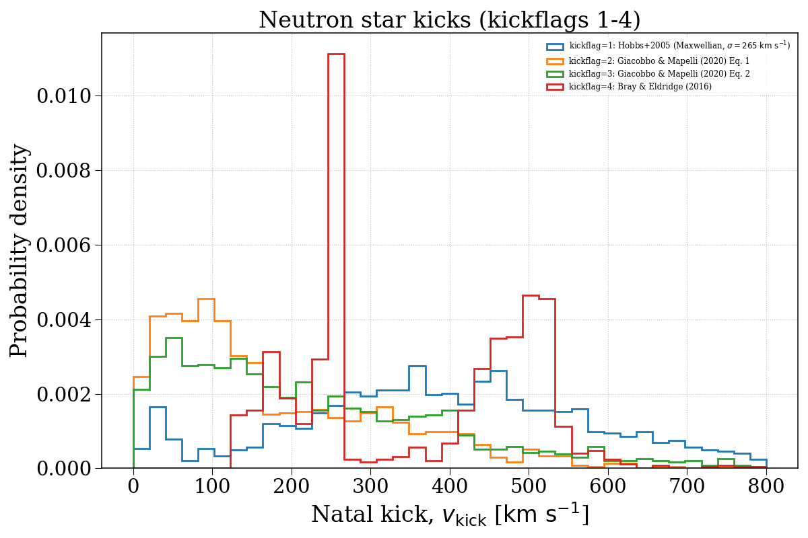
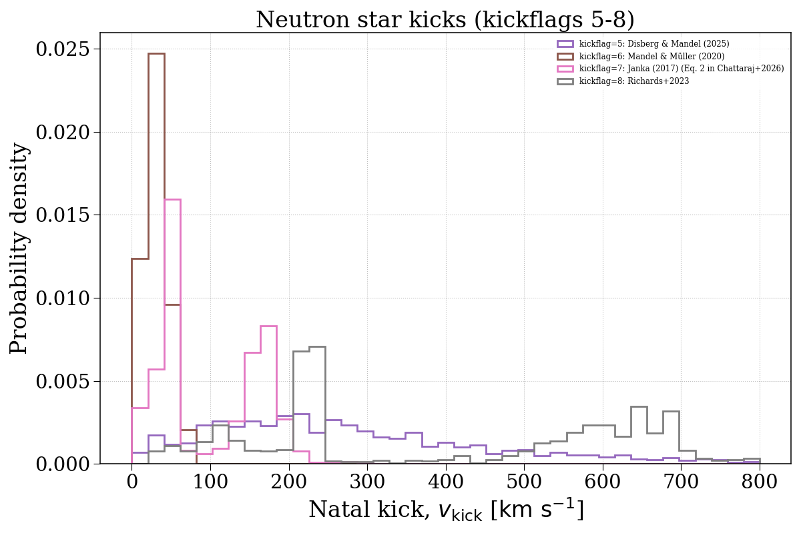
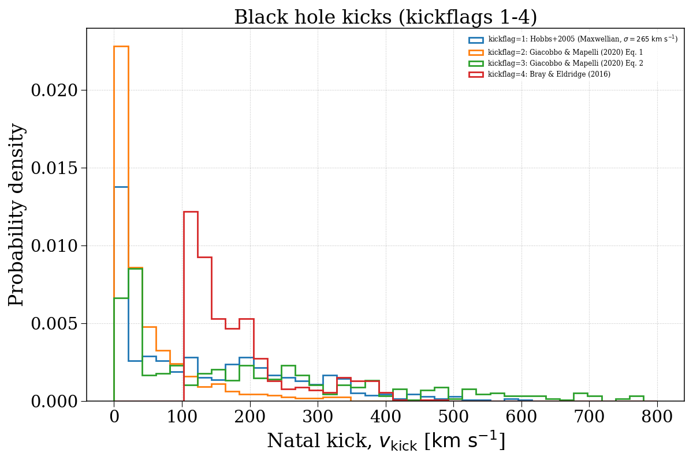
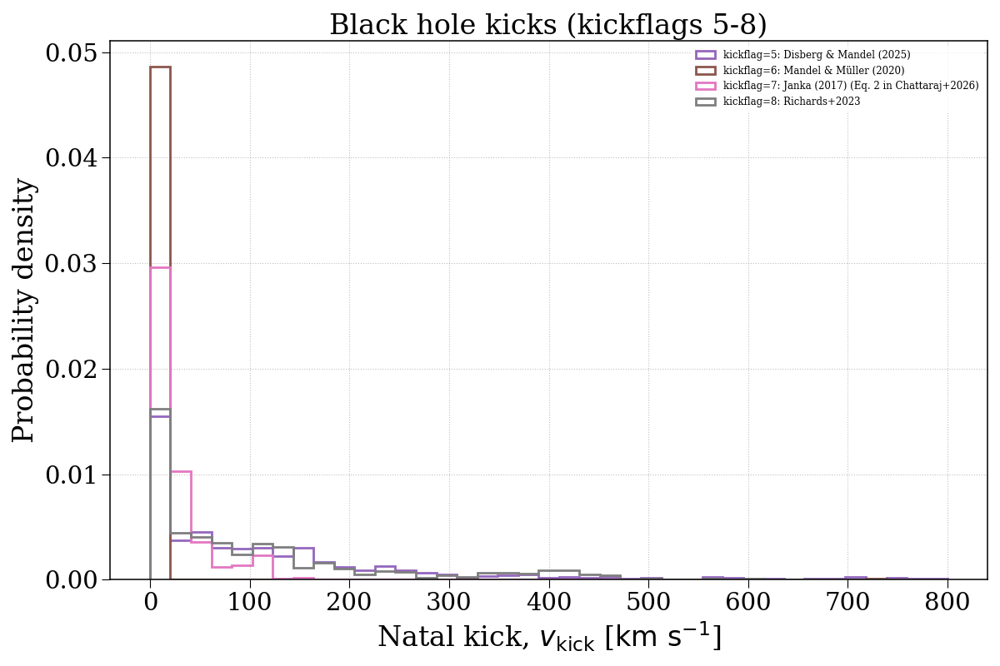

Note
Go to the end to download the full example code.
kickflag¶
This example demonstrates how changing the kickflag parameter can affect the natal kick velocity distributions of compact objects. We separate this into neutron stars and black holes.




Evolving population with kickflag = 1...
Evolving: 0%| | 0/2015 [00:00<?, ?sys/s]
Evolving: 1%| | 19/2015 [00:00<00:13, 151.82sys/s]
Evolving: 2%|▏ | 35/2015 [00:00<00:13, 150.17sys/s]
Evolving: 3%|▎ | 51/2015 [00:00<00:21, 89.37sys/s]
Evolving: 4%|▍ | 80/2015 [00:00<00:13, 140.16sys/s]
Evolving: 5%|▍ | 98/2015 [00:00<00:14, 131.23sys/s]
Evolving: 6%|▌ | 114/2015 [00:00<00:14, 129.80sys/s]
Evolving: 6%|▋ | 129/2015 [00:01<00:15, 120.19sys/s]
Evolving: 7%|▋ | 146/2015 [00:01<00:14, 129.82sys/s]
Evolving: 8%|▊ | 162/2015 [00:01<00:14, 127.73sys/s]
Evolving: 9%|▉ | 178/2015 [00:01<00:13, 134.81sys/s]
Evolving: 10%|▉ | 193/2015 [00:01<00:13, 134.32sys/s]
Evolving: 10%|█ | 208/2015 [00:01<00:13, 135.93sys/s]
Evolving: 11%|█ | 222/2015 [00:01<00:13, 135.14sys/s]
Evolving: 12%|█▏ | 236/2015 [00:01<00:15, 115.52sys/s]
Evolving: 13%|█▎ | 254/2015 [00:01<00:13, 131.08sys/s]
Evolving: 13%|█▎ | 268/2015 [00:02<00:17, 99.04sys/s]
Evolving: 14%|█▍ | 280/2015 [00:02<00:20, 83.15sys/s]
Evolving: 14%|█▍ | 291/2015 [00:02<00:19, 86.54sys/s]
Evolving: 16%|█▌ | 319/2015 [00:02<00:16, 100.16sys/s]
Evolving: 17%|█▋ | 333/2015 [00:02<00:16, 103.23sys/s]
Evolving: 17%|█▋ | 344/2015 [00:03<00:16, 98.93sys/s]
Evolving: 18%|█▊ | 369/2015 [00:03<00:12, 127.95sys/s]
Evolving: 19%|█▉ | 383/2015 [00:03<00:15, 104.43sys/s]
Evolving: 20%|██ | 404/2015 [00:03<00:16, 96.13sys/s]
Evolving: 21%|██▏ | 433/2015 [00:03<00:12, 130.76sys/s]
Evolving: 22%|██▏ | 449/2015 [00:03<00:13, 117.22sys/s]
Evolving: 23%|██▎ | 466/2015 [00:03<00:12, 124.36sys/s]
Evolving: 24%|██▍ | 482/2015 [00:04<00:12, 126.09sys/s]
Evolving: 25%|██▍ | 496/2015 [00:04<00:11, 128.89sys/s]
Evolving: 25%|██▌ | 510/2015 [00:04<00:11, 126.01sys/s]
Evolving: 26%|██▌ | 524/2015 [00:04<00:15, 96.33sys/s]
Evolving: 27%|██▋ | 536/2015 [00:04<00:15, 94.67sys/s]
Evolving: 27%|██▋ | 550/2015 [00:04<00:16, 90.89sys/s]
Evolving: 28%|██▊ | 566/2015 [00:05<00:15, 94.11sys/s]
Evolving: 29%|██▉ | 592/2015 [00:05<00:11, 125.29sys/s]
Evolving: 30%|███ | 611/2015 [00:05<00:10, 133.31sys/s]
Evolving: 31%|███ | 626/2015 [00:05<00:14, 96.18sys/s]
Evolving: 32%|███▏ | 651/2015 [00:05<00:10, 125.09sys/s]
Evolving: 33%|███▎ | 667/2015 [00:05<00:10, 126.32sys/s]
Evolving: 34%|███▍ | 682/2015 [00:05<00:10, 125.65sys/s]
Evolving: 35%|███▍ | 696/2015 [00:06<00:11, 117.66sys/s]
Evolving: 35%|███▌ | 714/2015 [00:06<00:09, 130.81sys/s]
Evolving: 36%|███▌ | 729/2015 [00:06<00:10, 125.06sys/s]
Evolving: 37%|███▋ | 743/2015 [00:06<00:10, 122.64sys/s]
Evolving: 38%|███▊ | 759/2015 [00:06<00:09, 129.72sys/s]
Evolving: 38%|███▊ | 773/2015 [00:06<00:10, 121.79sys/s]
Evolving: 39%|███▉ | 788/2015 [00:06<00:09, 127.37sys/s]
Evolving: 40%|███▉ | 802/2015 [00:06<00:10, 119.75sys/s]
Evolving: 40%|████ | 816/2015 [00:06<00:09, 124.96sys/s]
Evolving: 41%|████▏ | 832/2015 [00:07<00:09, 130.58sys/s]
Evolving: 42%|████▏ | 846/2015 [00:07<00:10, 112.22sys/s]
Evolving: 43%|████▎ | 860/2015 [00:07<00:13, 86.57sys/s]
Evolving: 44%|████▍ | 886/2015 [00:07<00:09, 117.77sys/s]
Evolving: 45%|████▍ | 905/2015 [00:07<00:08, 130.83sys/s]
Evolving: 46%|████▌ | 920/2015 [00:07<00:09, 119.46sys/s]
Evolving: 46%|████▋ | 934/2015 [00:07<00:08, 120.87sys/s]
Evolving: 47%|████▋ | 949/2015 [00:08<00:08, 126.44sys/s]
Evolving: 48%|████▊ | 963/2015 [00:08<00:08, 126.99sys/s]
Evolving: 49%|████▊ | 978/2015 [00:08<00:07, 132.92sys/s]
Evolving: 49%|████▉ | 992/2015 [00:08<00:08, 122.77sys/s]
Evolving: 50%|█████ | 1008/2015 [00:08<00:07, 128.57sys/s]
Evolving: 51%|█████ | 1022/2015 [00:08<00:07, 129.93sys/s]
Evolving: 51%|█████▏ | 1036/2015 [00:08<00:10, 94.04sys/s]
Evolving: 52%|█████▏ | 1056/2015 [00:09<00:08, 115.74sys/s]
Evolving: 53%|█████▎ | 1070/2015 [00:09<00:07, 118.85sys/s]
Evolving: 54%|█████▍ | 1084/2015 [00:09<00:07, 121.83sys/s]
Evolving: 55%|█████▍ | 1099/2015 [00:09<00:07, 124.41sys/s]
Evolving: 55%|█████▌ | 1113/2015 [00:09<00:09, 94.53sys/s]
Evolving: 56%|█████▌ | 1124/2015 [00:09<00:10, 86.70sys/s]
Evolving: 57%|█████▋ | 1146/2015 [00:09<00:07, 113.42sys/s]
Evolving: 58%|█████▊ | 1161/2015 [00:09<00:07, 121.31sys/s]
Evolving: 58%|█████▊ | 1175/2015 [00:10<00:07, 119.61sys/s]
Evolving: 59%|█████▉ | 1192/2015 [00:10<00:06, 130.96sys/s]
Evolving: 60%|█████▉ | 1207/2015 [00:10<00:05, 135.18sys/s]
Evolving: 61%|██████ | 1222/2015 [00:10<00:05, 135.25sys/s]
Evolving: 61%|██████▏ | 1236/2015 [00:10<00:09, 80.43sys/s]
Evolving: 63%|██████▎ | 1269/2015 [00:10<00:06, 120.34sys/s]
Evolving: 64%|██████▍ | 1285/2015 [00:11<00:05, 122.78sys/s]
Evolving: 65%|██████▍ | 1300/2015 [00:11<00:05, 128.03sys/s]
Evolving: 65%|██████▌ | 1315/2015 [00:11<00:05, 122.11sys/s]
Evolving: 66%|██████▌ | 1329/2015 [00:11<00:06, 103.96sys/s]
Evolving: 67%|██████▋ | 1350/2015 [00:11<00:05, 119.52sys/s]
Evolving: 68%|██████▊ | 1364/2015 [00:11<00:06, 108.13sys/s]
Evolving: 69%|██████▊ | 1382/2015 [00:11<00:05, 120.98sys/s]
Evolving: 69%|██████▉ | 1396/2015 [00:11<00:05, 121.99sys/s]
Evolving: 70%|██████▉ | 1410/2015 [00:12<00:04, 125.98sys/s]
Evolving: 71%|███████ | 1425/2015 [00:12<00:04, 131.91sys/s]
Evolving: 71%|███████▏ | 1439/2015 [00:12<00:04, 131.49sys/s]
Evolving: 72%|███████▏ | 1453/2015 [00:12<00:04, 133.51sys/s]
Evolving: 73%|███████▎ | 1467/2015 [00:12<00:04, 131.63sys/s]
Evolving: 73%|███████▎ | 1481/2015 [00:12<00:04, 126.79sys/s]
Evolving: 74%|███████▍ | 1496/2015 [00:12<00:04, 129.09sys/s]
Evolving: 75%|███████▍ | 1510/2015 [00:12<00:05, 89.07sys/s]
Evolving: 76%|███████▋ | 1539/2015 [00:13<00:03, 129.91sys/s]
Evolving: 77%|███████▋ | 1555/2015 [00:13<00:05, 89.99sys/s]
Evolving: 79%|███████▊ | 1583/2015 [00:13<00:03, 122.65sys/s]
Evolving: 79%|███████▉ | 1600/2015 [00:13<00:03, 123.06sys/s]
Evolving: 80%|████████ | 1616/2015 [00:13<00:03, 129.33sys/s]
Evolving: 81%|████████ | 1632/2015 [00:13<00:03, 108.82sys/s]
Evolving: 82%|████████▏ | 1650/2015 [00:14<00:03, 118.72sys/s]
Evolving: 83%|████████▎ | 1664/2015 [00:14<00:02, 121.42sys/s]
Evolving: 83%|████████▎ | 1678/2015 [00:14<00:03, 97.82sys/s]
Evolving: 84%|████████▍ | 1699/2015 [00:14<00:02, 118.69sys/s]
Evolving: 85%|████████▌ | 1715/2015 [00:14<00:02, 123.26sys/s]
Evolving: 86%|████████▌ | 1732/2015 [00:14<00:02, 128.29sys/s]
Evolving: 87%|████████▋ | 1748/2015 [00:14<00:02, 131.37sys/s]
Evolving: 87%|████████▋ | 1762/2015 [00:14<00:01, 131.14sys/s]
Evolving: 88%|████████▊ | 1776/2015 [00:15<00:02, 102.83sys/s]
Evolving: 89%|████████▉ | 1796/2015 [00:15<00:01, 117.42sys/s]
Evolving: 90%|████████▉ | 1811/2015 [00:15<00:01, 123.37sys/s]
Evolving: 91%|█████████ | 1825/2015 [00:15<00:01, 118.65sys/s]
Evolving: 91%|█████████ | 1838/2015 [00:15<00:01, 119.01sys/s]
Evolving: 92%|█████████▏| 1853/2015 [00:15<00:01, 125.82sys/s]
Evolving: 93%|█████████▎| 1866/2015 [00:15<00:01, 100.90sys/s]
Evolving: 94%|█████████▎| 1886/2015 [00:16<00:01, 111.10sys/s]
Evolving: 95%|█████████▍| 1905/2015 [00:16<00:00, 128.89sys/s]
Evolving: 95%|█████████▌| 1919/2015 [00:16<00:00, 121.66sys/s]
Evolving: 96%|█████████▌| 1936/2015 [00:16<00:00, 122.46sys/s]
Evolving: 97%|█████████▋| 1952/2015 [00:16<00:00, 127.54sys/s]
Evolving: 98%|█████████▊| 1966/2015 [00:16<00:00, 117.57sys/s]
Evolving: 98%|█████████▊| 1979/2015 [00:16<00:00, 108.54sys/s]
Evolving: 99%|█████████▉| 1996/2015 [00:17<00:00, 121.16sys/s]
Evolving: 100%|█████████▉| 2014/2015 [00:17<00:00, 134.29sys/s]
Evolving: 100%|██████████| 2015/2015 [00:17<00:00, 117.79sys/s]
[Time taken: 17.4269 seconds]
Evolving population with kickflag = 2...
Evolving: 0%| | 0/2015 [00:00<?, ?sys/s]
Evolving: 0%| | 1/2015 [00:00<03:31, 9.52sys/s]
Evolving: 1%| | 19/2015 [00:00<00:22, 87.36sys/s]
Evolving: 2%|▏ | 39/2015 [00:00<00:15, 128.95sys/s]
Evolving: 3%|▎ | 52/2015 [00:00<00:23, 83.54sys/s]
Evolving: 4%|▍ | 82/2015 [00:00<00:14, 132.07sys/s]
Evolving: 5%|▍ | 98/2015 [00:00<00:14, 133.25sys/s]
Evolving: 6%|▌ | 113/2015 [00:00<00:14, 132.64sys/s]
Evolving: 6%|▋ | 128/2015 [00:01<00:16, 114.11sys/s]
Evolving: 7%|▋ | 147/2015 [00:01<00:14, 131.50sys/s]
Evolving: 8%|▊ | 162/2015 [00:01<00:13, 133.86sys/s]
Evolving: 9%|▉ | 177/2015 [00:01<00:14, 128.17sys/s]
Evolving: 10%|▉ | 196/2015 [00:01<00:13, 138.60sys/s]
Evolving: 10%|█ | 211/2015 [00:01<00:13, 138.64sys/s]
Evolving: 11%|█ | 226/2015 [00:01<00:13, 136.18sys/s]
Evolving: 12%|█▏ | 240/2015 [00:01<00:13, 127.15sys/s]
Evolving: 13%|█▎ | 255/2015 [00:02<00:13, 128.26sys/s]
Evolving: 13%|█▎ | 268/2015 [00:02<00:17, 99.60sys/s]
Evolving: 14%|█▍ | 280/2015 [00:02<00:20, 82.81sys/s]
Evolving: 15%|█▌ | 308/2015 [00:02<00:14, 121.85sys/s]
Evolving: 16%|█▌ | 323/2015 [00:02<00:17, 97.62sys/s]
Evolving: 17%|█▋ | 336/2015 [00:02<00:16, 101.14sys/s]
Evolving: 17%|█▋ | 348/2015 [00:03<00:17, 96.49sys/s]
Evolving: 19%|█▊ | 373/2015 [00:03<00:18, 91.19sys/s]
Evolving: 20%|██ | 404/2015 [00:03<00:15, 101.88sys/s]
Evolving: 21%|██▏ | 433/2015 [00:03<00:11, 132.87sys/s]
Evolving: 22%|██▏ | 450/2015 [00:03<00:12, 123.32sys/s]
Evolving: 23%|██▎ | 467/2015 [00:04<00:11, 129.20sys/s]
Evolving: 24%|██▍ | 482/2015 [00:04<00:12, 125.10sys/s]
Evolving: 25%|██▍ | 498/2015 [00:04<00:11, 129.99sys/s]
Evolving: 25%|██▌ | 512/2015 [00:04<00:11, 131.68sys/s]
Evolving: 26%|██▌ | 526/2015 [00:04<00:14, 103.71sys/s]
Evolving: 27%|██▋ | 538/2015 [00:04<00:15, 94.01sys/s]
Evolving: 27%|██▋ | 550/2015 [00:04<00:15, 92.22sys/s]
Evolving: 28%|██▊ | 566/2015 [00:05<00:15, 92.11sys/s]
Evolving: 29%|██▉ | 592/2015 [00:05<00:11, 125.31sys/s]
Evolving: 30%|███ | 611/2015 [00:05<00:10, 137.97sys/s]
Evolving: 31%|███ | 627/2015 [00:05<00:14, 99.09sys/s]
Evolving: 32%|███▏ | 653/2015 [00:05<00:10, 128.12sys/s]
Evolving: 33%|███▎ | 669/2015 [00:05<00:10, 129.31sys/s]
Evolving: 34%|███▍ | 684/2015 [00:05<00:10, 129.65sys/s]
Evolving: 35%|███▍ | 699/2015 [00:06<00:10, 126.94sys/s]
Evolving: 35%|███▌ | 713/2015 [00:06<00:10, 129.00sys/s]
Evolving: 36%|███▌ | 728/2015 [00:06<00:10, 127.69sys/s]
Evolving: 37%|███▋ | 742/2015 [00:06<00:11, 112.25sys/s]
Evolving: 38%|███▊ | 763/2015 [00:06<00:09, 132.72sys/s]
Evolving: 39%|███▊ | 778/2015 [00:06<00:09, 128.29sys/s]
Evolving: 39%|███▉ | 792/2015 [00:06<00:09, 130.45sys/s]
Evolving: 40%|████ | 806/2015 [00:06<00:09, 123.09sys/s]
Evolving: 41%|████ | 819/2015 [00:06<00:09, 123.74sys/s]
Evolving: 41%|████▏ | 833/2015 [00:07<00:09, 127.57sys/s]
Evolving: 42%|████▏ | 846/2015 [00:07<00:10, 112.87sys/s]
Evolving: 43%|████▎ | 858/2015 [00:07<00:10, 112.23sys/s]
Evolving: 43%|████▎ | 870/2015 [00:07<00:10, 104.16sys/s]
Evolving: 44%|████▍ | 886/2015 [00:07<00:10, 110.63sys/s]
Evolving: 45%|████▍ | 905/2015 [00:07<00:08, 128.29sys/s]
Evolving: 46%|████▌ | 919/2015 [00:07<00:09, 115.39sys/s]
Evolving: 46%|████▋ | 934/2015 [00:07<00:08, 123.95sys/s]
Evolving: 47%|████▋ | 950/2015 [00:08<00:09, 117.08sys/s]
Evolving: 48%|████▊ | 966/2015 [00:08<00:08, 126.75sys/s]
Evolving: 49%|████▊ | 980/2015 [00:08<00:08, 119.29sys/s]
Evolving: 49%|████▉ | 997/2015 [00:08<00:08, 127.24sys/s]
Evolving: 50%|█████ | 1012/2015 [00:08<00:08, 118.39sys/s]
Evolving: 51%|█████ | 1028/2015 [00:08<00:08, 117.91sys/s]
Evolving: 52%|█████▏ | 1041/2015 [00:08<00:10, 93.50sys/s]
Evolving: 53%|█████▎ | 1067/2015 [00:09<00:07, 125.45sys/s]
Evolving: 54%|█████▎ | 1082/2015 [00:09<00:07, 126.49sys/s]
Evolving: 54%|█████▍ | 1097/2015 [00:09<00:07, 128.64sys/s]
Evolving: 55%|█████▌ | 1111/2015 [00:09<00:09, 93.76sys/s]
Evolving: 56%|█████▌ | 1123/2015 [00:09<00:10, 88.20sys/s]
Evolving: 57%|█████▋ | 1141/2015 [00:09<00:08, 105.02sys/s]
Evolving: 58%|█████▊ | 1160/2015 [00:09<00:06, 123.16sys/s]
Evolving: 58%|█████▊ | 1174/2015 [00:10<00:06, 124.58sys/s]
Evolving: 59%|█████▉ | 1192/2015 [00:10<00:06, 136.47sys/s]
Evolving: 60%|█████▉ | 1207/2015 [00:10<00:06, 132.88sys/s]
Evolving: 61%|██████ | 1222/2015 [00:10<00:05, 132.81sys/s]
Evolving: 61%|██████▏ | 1236/2015 [00:10<00:09, 84.47sys/s]
Evolving: 63%|██████▎ | 1265/2015 [00:10<00:06, 121.07sys/s]
Evolving: 64%|██████▎ | 1281/2015 [00:10<00:05, 122.88sys/s]
Evolving: 64%|██████▍ | 1296/2015 [00:11<00:05, 125.89sys/s]
Evolving: 65%|██████▌ | 1311/2015 [00:11<00:06, 111.46sys/s]
Evolving: 66%|██████▌ | 1324/2015 [00:11<00:07, 97.61sys/s]
Evolving: 67%|██████▋ | 1350/2015 [00:11<00:05, 127.90sys/s]
Evolving: 68%|██████▊ | 1365/2015 [00:11<00:06, 108.08sys/s]
Evolving: 69%|██████▉ | 1386/2015 [00:11<00:05, 123.96sys/s]
Evolving: 69%|██████▉ | 1400/2015 [00:11<00:04, 126.62sys/s]
Evolving: 70%|███████ | 1416/2015 [00:12<00:04, 132.62sys/s]
Evolving: 71%|███████ | 1431/2015 [00:12<00:04, 131.22sys/s]
Evolving: 72%|███████▏ | 1445/2015 [00:12<00:04, 130.10sys/s]
Evolving: 72%|███████▏ | 1459/2015 [00:12<00:04, 127.32sys/s]
Evolving: 73%|███████▎ | 1473/2015 [00:12<00:04, 128.66sys/s]
Evolving: 74%|███████▍ | 1488/2015 [00:12<00:04, 123.80sys/s]
Evolving: 75%|███████▍ | 1505/2015 [00:12<00:03, 134.56sys/s]
Evolving: 75%|███████▌ | 1519/2015 [00:12<00:04, 108.76sys/s]
Evolving: 76%|███████▌ | 1536/2015 [00:13<00:04, 118.72sys/s]
Evolving: 77%|███████▋ | 1549/2015 [00:13<00:05, 87.94sys/s]
Evolving: 78%|███████▊ | 1574/2015 [00:13<00:03, 118.82sys/s]
Evolving: 79%|███████▉ | 1590/2015 [00:13<00:03, 125.96sys/s]
Evolving: 80%|███████▉ | 1605/2015 [00:13<00:03, 121.08sys/s]
Evolving: 80%|████████ | 1621/2015 [00:13<00:03, 128.83sys/s]
Evolving: 81%|████████ | 1635/2015 [00:13<00:02, 126.77sys/s]
Evolving: 82%|████████▏ | 1649/2015 [00:14<00:02, 128.03sys/s]
Evolving: 83%|████████▎ | 1663/2015 [00:14<00:03, 113.75sys/s]
Evolving: 83%|████████▎ | 1675/2015 [00:14<00:04, 84.78sys/s]
Evolving: 85%|████████▍ | 1703/2015 [00:14<00:02, 120.58sys/s]
Evolving: 85%|████████▌ | 1719/2015 [00:14<00:02, 126.63sys/s]
Evolving: 86%|████████▌ | 1734/2015 [00:14<00:02, 130.28sys/s]
Evolving: 87%|████████▋ | 1749/2015 [00:14<00:01, 133.31sys/s]
Evolving: 88%|████████▊ | 1764/2015 [00:14<00:01, 133.07sys/s]
Evolving: 88%|████████▊ | 1778/2015 [00:15<00:02, 104.35sys/s]
Evolving: 89%|████████▉ | 1795/2015 [00:15<00:01, 118.35sys/s]
Evolving: 90%|████████▉ | 1809/2015 [00:15<00:01, 119.11sys/s]
Evolving: 90%|█████████ | 1822/2015 [00:15<00:01, 114.34sys/s]
Evolving: 91%|█████████ | 1835/2015 [00:15<00:01, 113.38sys/s]
Evolving: 92%|█████████▏| 1852/2015 [00:15<00:01, 125.28sys/s]
Evolving: 93%|█████████▎| 1865/2015 [00:15<00:01, 97.14sys/s]
Evolving: 94%|█████████▎| 1886/2015 [00:16<00:01, 112.18sys/s]
Evolving: 95%|█████████▍| 1905/2015 [00:16<00:00, 126.50sys/s]
Evolving: 95%|█████████▌| 1919/2015 [00:16<00:00, 127.33sys/s]
Evolving: 96%|█████████▌| 1933/2015 [00:16<00:00, 122.29sys/s]
Evolving: 97%|█████████▋| 1948/2015 [00:16<00:00, 128.90sys/s]
Evolving: 97%|█████████▋| 1962/2015 [00:16<00:00, 131.25sys/s]
Evolving: 98%|█████████▊| 1976/2015 [00:16<00:00, 95.29sys/s]
Evolving: 99%|█████████▉| 2000/2015 [00:16<00:00, 125.05sys/s]
Evolving: 100%|██████████| 2015/2015 [00:17<00:00, 117.94sys/s]
[Time taken: 17.3016 seconds]
Evolving population with kickflag = 3...
Evolving: 0%| | 0/2015 [00:00<?, ?sys/s]
Evolving: 0%| | 1/2015 [00:00<03:55, 8.57sys/s]
Evolving: 1%| | 19/2015 [00:00<00:22, 88.32sys/s]
Evolving: 2%|▏ | 35/2015 [00:00<00:17, 115.67sys/s]
Evolving: 2%|▏ | 48/2015 [00:00<00:26, 75.28sys/s]
Evolving: 4%|▍ | 80/2015 [00:00<00:14, 133.25sys/s]
Evolving: 5%|▍ | 97/2015 [00:00<00:15, 121.68sys/s]
Evolving: 6%|▌ | 113/2015 [00:00<00:14, 129.51sys/s]
Evolving: 6%|▋ | 128/2015 [00:01<00:16, 116.73sys/s]
Evolving: 7%|▋ | 146/2015 [00:01<00:14, 129.52sys/s]
Evolving: 8%|▊ | 161/2015 [00:01<00:14, 131.05sys/s]
Evolving: 9%|▊ | 176/2015 [00:01<00:14, 127.26sys/s]
Evolving: 10%|▉ | 192/2015 [00:01<00:14, 127.74sys/s]
Evolving: 10%|█ | 208/2015 [00:01<00:14, 125.55sys/s]
Evolving: 11%|█ | 226/2015 [00:01<00:13, 132.22sys/s]
Evolving: 12%|█▏ | 240/2015 [00:02<00:14, 126.12sys/s]
Evolving: 13%|█▎ | 256/2015 [00:02<00:13, 127.44sys/s]
Evolving: 13%|█▎ | 269/2015 [00:02<00:17, 102.11sys/s]
Evolving: 14%|█▍ | 280/2015 [00:02<00:20, 84.72sys/s]
Evolving: 14%|█▍ | 291/2015 [00:02<00:19, 88.32sys/s]
Evolving: 16%|█▌ | 319/2015 [00:02<00:17, 96.79sys/s]
Evolving: 17%|█▋ | 333/2015 [00:03<00:16, 99.07sys/s]
Evolving: 17%|█▋ | 344/2015 [00:03<00:17, 94.78sys/s]
Evolving: 18%|█▊ | 372/2015 [00:03<00:12, 133.95sys/s]
Evolving: 19%|█▉ | 387/2015 [00:03<00:14, 113.48sys/s]
Evolving: 20%|██ | 404/2015 [00:03<00:17, 91.92sys/s]
Evolving: 22%|██▏ | 435/2015 [00:03<00:12, 129.73sys/s]
Evolving: 22%|██▏ | 452/2015 [00:03<00:12, 121.14sys/s]
Evolving: 23%|██▎ | 468/2015 [00:04<00:12, 126.76sys/s]
Evolving: 24%|██▍ | 483/2015 [00:04<00:13, 116.55sys/s]
Evolving: 25%|██▍ | 499/2015 [00:04<00:12, 125.09sys/s]
Evolving: 26%|██▌ | 514/2015 [00:04<00:11, 126.39sys/s]
Evolving: 26%|██▌ | 528/2015 [00:04<00:14, 103.81sys/s]
Evolving: 27%|██▋ | 540/2015 [00:04<00:15, 93.87sys/s]
Evolving: 27%|██▋ | 551/2015 [00:05<00:16, 87.45sys/s]
Evolving: 28%|██▊ | 566/2015 [00:05<00:15, 91.35sys/s]
Evolving: 29%|██▉ | 592/2015 [00:05<00:11, 122.92sys/s]
Evolving: 30%|███ | 611/2015 [00:05<00:10, 137.34sys/s]
Evolving: 31%|███ | 626/2015 [00:05<00:14, 95.09sys/s]
Evolving: 32%|███▏ | 653/2015 [00:05<00:10, 128.21sys/s]
Evolving: 33%|███▎ | 670/2015 [00:05<00:10, 127.75sys/s]
Evolving: 34%|███▍ | 686/2015 [00:06<00:10, 121.95sys/s]
Evolving: 35%|███▍ | 700/2015 [00:06<00:10, 123.60sys/s]
Evolving: 35%|███▌ | 715/2015 [00:06<00:10, 126.78sys/s]
Evolving: 36%|███▌ | 729/2015 [00:06<00:09, 128.83sys/s]
Evolving: 37%|███▋ | 743/2015 [00:06<00:10, 123.74sys/s]
Evolving: 38%|███▊ | 758/2015 [00:06<00:09, 130.17sys/s]
Evolving: 38%|███▊ | 772/2015 [00:06<00:10, 121.18sys/s]
Evolving: 39%|███▉ | 788/2015 [00:06<00:09, 128.77sys/s]
Evolving: 40%|███▉ | 802/2015 [00:06<00:10, 118.94sys/s]
Evolving: 41%|████ | 817/2015 [00:07<00:09, 124.90sys/s]
Evolving: 41%|████ | 830/2015 [00:07<00:09, 125.07sys/s]
Evolving: 42%|████▏ | 845/2015 [00:07<00:08, 131.05sys/s]
Evolving: 43%|████▎ | 859/2015 [00:07<00:10, 107.08sys/s]
Evolving: 43%|████▎ | 871/2015 [00:07<00:11, 102.35sys/s]
Evolving: 44%|████▍ | 886/2015 [00:07<00:10, 107.83sys/s]
Evolving: 45%|████▍ | 898/2015 [00:07<00:10, 109.58sys/s]
Evolving: 45%|████▌ | 914/2015 [00:08<00:10, 108.17sys/s]
Evolving: 46%|████▌ | 930/2015 [00:08<00:09, 115.75sys/s]
Evolving: 47%|████▋ | 950/2015 [00:08<00:09, 117.56sys/s]
Evolving: 48%|████▊ | 968/2015 [00:08<00:08, 130.86sys/s]
Evolving: 49%|████▊ | 982/2015 [00:08<00:07, 130.32sys/s]
Evolving: 49%|████▉ | 996/2015 [00:08<00:07, 130.01sys/s]
Evolving: 50%|█████ | 1012/2015 [00:08<00:08, 115.33sys/s]
Evolving: 51%|█████ | 1028/2015 [00:08<00:08, 114.52sys/s]
Evolving: 52%|█████▏ | 1040/2015 [00:09<00:10, 89.13sys/s]
Evolving: 53%|█████▎ | 1068/2015 [00:09<00:07, 127.64sys/s]
Evolving: 54%|█████▎ | 1083/2015 [00:09<00:07, 123.79sys/s]
Evolving: 54%|█████▍ | 1097/2015 [00:09<00:07, 124.71sys/s]
Evolving: 55%|█████▌ | 1111/2015 [00:09<00:09, 94.96sys/s]
Evolving: 56%|█████▌ | 1123/2015 [00:09<00:10, 88.63sys/s]
Evolving: 57%|█████▋ | 1141/2015 [00:10<00:08, 106.26sys/s]
Evolving: 58%|█████▊ | 1160/2015 [00:10<00:06, 124.99sys/s]
Evolving: 58%|█████▊ | 1175/2015 [00:10<00:06, 123.06sys/s]
Evolving: 59%|█████▉ | 1193/2015 [00:10<00:06, 134.02sys/s]
Evolving: 60%|█████▉ | 1208/2015 [00:10<00:05, 137.82sys/s]
Evolving: 61%|██████ | 1223/2015 [00:10<00:06, 127.72sys/s]
Evolving: 61%|██████▏ | 1237/2015 [00:10<00:09, 85.49sys/s]
Evolving: 63%|██████▎ | 1265/2015 [00:11<00:06, 118.94sys/s]
Evolving: 64%|██████▎ | 1280/2015 [00:11<00:05, 125.39sys/s]
Evolving: 64%|██████▍ | 1295/2015 [00:11<00:05, 127.94sys/s]
Evolving: 65%|██████▌ | 1310/2015 [00:11<00:05, 127.37sys/s]
Evolving: 66%|██████▌ | 1324/2015 [00:11<00:07, 95.26sys/s]
Evolving: 67%|██████▋ | 1350/2015 [00:11<00:05, 129.00sys/s]
Evolving: 68%|██████▊ | 1366/2015 [00:11<00:05, 110.52sys/s]
Evolving: 69%|██████▊ | 1385/2015 [00:12<00:05, 122.19sys/s]
Evolving: 69%|██████▉ | 1400/2015 [00:12<00:04, 127.61sys/s]
Evolving: 70%|███████ | 1415/2015 [00:12<00:04, 131.80sys/s]
Evolving: 71%|███████ | 1430/2015 [00:12<00:04, 126.27sys/s]
Evolving: 72%|███████▏ | 1444/2015 [00:12<00:04, 125.16sys/s]
Evolving: 72%|███████▏ | 1458/2015 [00:12<00:04, 122.95sys/s]
Evolving: 73%|███████▎ | 1474/2015 [00:12<00:04, 130.81sys/s]
Evolving: 74%|███████▍ | 1490/2015 [00:12<00:03, 134.96sys/s]
Evolving: 75%|███████▍ | 1504/2015 [00:12<00:03, 134.43sys/s]
Evolving: 75%|███████▌ | 1518/2015 [00:13<00:04, 104.32sys/s]
Evolving: 76%|███████▋ | 1538/2015 [00:13<00:03, 120.81sys/s]
Evolving: 77%|███████▋ | 1552/2015 [00:13<00:04, 95.40sys/s]
Evolving: 78%|███████▊ | 1573/2015 [00:13<00:03, 117.36sys/s]
Evolving: 79%|███████▉ | 1587/2015 [00:13<00:03, 122.12sys/s]
Evolving: 79%|███████▉ | 1601/2015 [00:13<00:03, 118.12sys/s]
Evolving: 80%|████████ | 1617/2015 [00:13<00:03, 128.11sys/s]
Evolving: 81%|████████ | 1631/2015 [00:14<00:03, 123.56sys/s]
Evolving: 82%|████████▏ | 1645/2015 [00:14<00:02, 127.39sys/s]
Evolving: 82%|████████▏ | 1659/2015 [00:14<00:02, 128.30sys/s]
Evolving: 83%|████████▎ | 1673/2015 [00:14<00:03, 88.66sys/s]
Evolving: 84%|████████▍ | 1699/2015 [00:14<00:02, 123.12sys/s]
Evolving: 85%|████████▌ | 1715/2015 [00:14<00:02, 125.53sys/s]
Evolving: 86%|████████▌ | 1731/2015 [00:14<00:02, 133.10sys/s]
Evolving: 87%|████████▋ | 1746/2015 [00:14<00:02, 128.61sys/s]
Evolving: 87%|████████▋ | 1760/2015 [00:15<00:02, 124.72sys/s]
Evolving: 88%|████████▊ | 1774/2015 [00:15<00:02, 102.47sys/s]
Evolving: 89%|████████▉ | 1795/2015 [00:15<00:01, 122.00sys/s]
Evolving: 90%|████████▉ | 1809/2015 [00:15<00:01, 119.32sys/s]
Evolving: 90%|█████████ | 1822/2015 [00:15<00:01, 120.09sys/s]
Evolving: 91%|█████████ | 1835/2015 [00:15<00:01, 114.65sys/s]
Evolving: 92%|█████████▏| 1851/2015 [00:15<00:01, 125.25sys/s]
Evolving: 93%|█████████▎| 1864/2015 [00:16<00:01, 92.21sys/s]
Evolving: 94%|█████████▎| 1886/2015 [00:16<00:01, 109.00sys/s]
Evolving: 95%|█████████▍| 1907/2015 [00:16<00:00, 116.48sys/s]
Evolving: 95%|█████████▌| 1923/2015 [00:16<00:00, 122.65sys/s]
Evolving: 96%|█████████▌| 1938/2015 [00:16<00:00, 127.99sys/s]
Evolving: 97%|█████████▋| 1956/2015 [00:16<00:00, 140.73sys/s]
Evolving: 98%|█████████▊| 1971/2015 [00:16<00:00, 132.64sys/s]
Evolving: 99%|█████████▊| 1985/2015 [00:17<00:00, 109.98sys/s]
Evolving: 99%|█████████▉| 2002/2015 [00:17<00:00, 123.80sys/s]
Evolving: 100%|██████████| 2015/2015 [00:17<00:00, 117.01sys/s]
[Time taken: 17.4486 seconds]
Evolving population with kickflag = 4...
Evolving: 0%| | 0/2015 [00:00<?, ?sys/s]
Evolving: 0%| | 1/2015 [00:00<03:34, 9.37sys/s]
Evolving: 1%| | 19/2015 [00:00<00:21, 94.61sys/s]
Evolving: 2%|▏ | 38/2015 [00:00<00:15, 128.07sys/s]
Evolving: 3%|▎ | 51/2015 [00:00<00:23, 82.34sys/s]
Evolving: 4%|▍ | 80/2015 [00:00<00:14, 133.89sys/s]
Evolving: 5%|▍ | 97/2015 [00:00<00:14, 129.38sys/s]
Evolving: 6%|▌ | 113/2015 [00:00<00:14, 127.43sys/s]
Evolving: 6%|▋ | 128/2015 [00:01<00:15, 119.12sys/s]
Evolving: 7%|▋ | 144/2015 [00:01<00:15, 124.49sys/s]
Evolving: 8%|▊ | 162/2015 [00:01<00:13, 132.56sys/s]
Evolving: 9%|▉ | 180/2015 [00:01<00:13, 131.67sys/s]
Evolving: 10%|▉ | 196/2015 [00:01<00:13, 137.40sys/s]
Evolving: 10%|█ | 211/2015 [00:01<00:13, 138.00sys/s]
Evolving: 11%|█ | 226/2015 [00:01<00:13, 134.22sys/s]
Evolving: 12%|█▏ | 240/2015 [00:01<00:13, 128.96sys/s]
Evolving: 13%|█▎ | 255/2015 [00:02<00:13, 131.76sys/s]
Evolving: 13%|█▎ | 269/2015 [00:02<00:17, 98.49sys/s]
Evolving: 14%|█▍ | 281/2015 [00:02<00:18, 92.78sys/s]
Evolving: 14%|█▍ | 292/2015 [00:02<00:20, 84.05sys/s]
Evolving: 16%|█▌ | 319/2015 [00:02<00:16, 104.60sys/s]
Evolving: 17%|█▋ | 333/2015 [00:02<00:16, 99.39sys/s]
Evolving: 18%|█▊ | 356/2015 [00:03<00:13, 122.41sys/s]
Evolving: 18%|█▊ | 372/2015 [00:03<00:12, 129.54sys/s]
Evolving: 19%|█▉ | 386/2015 [00:03<00:14, 111.02sys/s]
Evolving: 20%|██ | 404/2015 [00:03<00:17, 90.17sys/s]
Evolving: 22%|██▏ | 435/2015 [00:03<00:12, 127.86sys/s]
Evolving: 22%|██▏ | 451/2015 [00:03<00:12, 121.05sys/s]
Evolving: 23%|██▎ | 466/2015 [00:03<00:12, 126.07sys/s]
Evolving: 24%|██▍ | 481/2015 [00:04<00:12, 125.29sys/s]
Evolving: 25%|██▍ | 495/2015 [00:04<00:12, 121.15sys/s]
Evolving: 25%|██▌ | 510/2015 [00:04<00:12, 120.96sys/s]
Evolving: 26%|██▌ | 523/2015 [00:04<00:15, 98.21sys/s]
Evolving: 27%|██▋ | 535/2015 [00:04<00:16, 90.09sys/s]
Evolving: 27%|██▋ | 550/2015 [00:04<00:15, 95.89sys/s]
Evolving: 28%|██▊ | 566/2015 [00:05<00:15, 93.03sys/s]
Evolving: 29%|██▉ | 592/2015 [00:05<00:11, 125.96sys/s]
Evolving: 30%|███ | 609/2015 [00:05<00:10, 134.48sys/s]
Evolving: 31%|███ | 624/2015 [00:05<00:15, 91.78sys/s]
Evolving: 33%|███▎ | 655/2015 [00:05<00:11, 121.55sys/s]
Evolving: 33%|███▎ | 671/2015 [00:05<00:10, 127.28sys/s]
Evolving: 34%|███▍ | 689/2015 [00:05<00:10, 129.98sys/s]
Evolving: 35%|███▍ | 704/2015 [00:06<00:10, 129.68sys/s]
Evolving: 36%|███▌ | 720/2015 [00:06<00:09, 130.23sys/s]
Evolving: 37%|███▋ | 736/2015 [00:06<00:10, 120.12sys/s]
Evolving: 37%|███▋ | 755/2015 [00:06<00:09, 132.24sys/s]
Evolving: 38%|███▊ | 769/2015 [00:06<00:10, 121.58sys/s]
Evolving: 39%|███▉ | 787/2015 [00:06<00:09, 134.28sys/s]
Evolving: 40%|███▉ | 802/2015 [00:06<00:10, 119.55sys/s]
Evolving: 41%|████ | 817/2015 [00:06<00:09, 124.40sys/s]
Evolving: 41%|████▏ | 832/2015 [00:07<00:09, 125.52sys/s]
Evolving: 42%|████▏ | 846/2015 [00:07<00:10, 115.02sys/s]
Evolving: 43%|████▎ | 860/2015 [00:07<00:13, 88.12sys/s]
Evolving: 44%|████▍ | 886/2015 [00:07<00:09, 118.69sys/s]
Evolving: 45%|████▍ | 905/2015 [00:07<00:08, 131.57sys/s]
Evolving: 46%|████▌ | 920/2015 [00:07<00:09, 115.91sys/s]
Evolving: 47%|████▋ | 937/2015 [00:08<00:08, 127.58sys/s]
Evolving: 47%|████▋ | 952/2015 [00:08<00:08, 119.07sys/s]
Evolving: 48%|████▊ | 970/2015 [00:08<00:08, 123.96sys/s]
Evolving: 49%|████▉ | 985/2015 [00:08<00:08, 125.94sys/s]
Evolving: 50%|████▉ | 1001/2015 [00:08<00:07, 127.78sys/s]
Evolving: 50%|█████ | 1015/2015 [00:08<00:07, 126.39sys/s]
Evolving: 51%|█████ | 1028/2015 [00:08<00:08, 110.61sys/s]
Evolving: 52%|█████▏ | 1040/2015 [00:09<00:10, 89.79sys/s]
Evolving: 53%|█████▎ | 1067/2015 [00:09<00:07, 124.91sys/s]
Evolving: 54%|█████▎ | 1082/2015 [00:09<00:07, 125.92sys/s]
Evolving: 54%|█████▍ | 1096/2015 [00:09<00:07, 128.75sys/s]
Evolving: 55%|█████▌ | 1110/2015 [00:09<00:09, 95.06sys/s]
Evolving: 56%|█████▌ | 1122/2015 [00:09<00:09, 93.26sys/s]
Evolving: 57%|█████▋ | 1141/2015 [00:09<00:08, 107.17sys/s]
Evolving: 58%|█████▊ | 1161/2015 [00:09<00:06, 127.89sys/s]
Evolving: 58%|█████▊ | 1176/2015 [00:10<00:06, 130.46sys/s]
Evolving: 59%|█████▉ | 1191/2015 [00:10<00:06, 134.91sys/s]
Evolving: 60%|█████▉ | 1206/2015 [00:10<00:06, 133.50sys/s]
Evolving: 61%|██████ | 1220/2015 [00:10<00:06, 130.55sys/s]
Evolving: 61%|██████ | 1234/2015 [00:10<00:09, 81.30sys/s]
Evolving: 63%|██████▎ | 1263/2015 [00:10<00:06, 119.91sys/s]
Evolving: 63%|██████▎ | 1279/2015 [00:10<00:06, 116.90sys/s]
Evolving: 64%|██████▍ | 1297/2015 [00:11<00:05, 129.57sys/s]
Evolving: 65%|██████▌ | 1313/2015 [00:11<00:05, 119.73sys/s]
Evolving: 66%|██████▌ | 1327/2015 [00:11<00:06, 102.25sys/s]
Evolving: 67%|██████▋ | 1350/2015 [00:11<00:05, 126.61sys/s]
Evolving: 68%|██████▊ | 1365/2015 [00:11<00:05, 111.77sys/s]
Evolving: 69%|██████▊ | 1382/2015 [00:11<00:05, 124.11sys/s]
Evolving: 69%|██████▉ | 1396/2015 [00:11<00:04, 126.02sys/s]
Evolving: 70%|███████ | 1412/2015 [00:12<00:04, 126.78sys/s]
Evolving: 71%|███████ | 1429/2015 [00:12<00:04, 136.09sys/s]
Evolving: 72%|███████▏ | 1444/2015 [00:12<00:04, 138.69sys/s]
Evolving: 72%|███████▏ | 1459/2015 [00:12<00:04, 131.39sys/s]
Evolving: 73%|███████▎ | 1473/2015 [00:12<00:04, 133.08sys/s]
Evolving: 74%|███████▍ | 1487/2015 [00:12<00:04, 129.05sys/s]
Evolving: 75%|███████▍ | 1503/2015 [00:12<00:03, 135.61sys/s]
Evolving: 75%|███████▌ | 1517/2015 [00:12<00:04, 105.73sys/s]
Evolving: 76%|███████▋ | 1538/2015 [00:13<00:03, 127.92sys/s]
Evolving: 77%|███████▋ | 1553/2015 [00:13<00:05, 87.07sys/s]
Evolving: 79%|███████▊ | 1582/2015 [00:13<00:03, 123.41sys/s]
Evolving: 79%|███████▉ | 1598/2015 [00:13<00:03, 118.25sys/s]
Evolving: 80%|████████ | 1618/2015 [00:13<00:03, 131.73sys/s]
Evolving: 81%|████████ | 1634/2015 [00:13<00:02, 131.34sys/s]
Evolving: 82%|████████▏ | 1649/2015 [00:13<00:02, 131.65sys/s]
Evolving: 83%|████████▎ | 1664/2015 [00:14<00:02, 127.79sys/s]
Evolving: 83%|████████▎ | 1678/2015 [00:14<00:03, 103.61sys/s]
Evolving: 84%|████████▍ | 1698/2015 [00:14<00:02, 120.29sys/s]
Evolving: 85%|████████▌ | 1715/2015 [00:14<00:02, 131.07sys/s]
Evolving: 86%|████████▌ | 1730/2015 [00:14<00:02, 133.10sys/s]
Evolving: 87%|████████▋ | 1746/2015 [00:14<00:02, 132.52sys/s]
Evolving: 87%|████████▋ | 1760/2015 [00:14<00:01, 128.94sys/s]
Evolving: 88%|████████▊ | 1774/2015 [00:15<00:02, 104.76sys/s]
Evolving: 89%|████████▉ | 1794/2015 [00:15<00:01, 125.53sys/s]
Evolving: 90%|████████▉ | 1808/2015 [00:15<00:01, 122.60sys/s]
Evolving: 90%|█████████ | 1822/2015 [00:15<00:01, 119.81sys/s]
Evolving: 91%|█████████ | 1835/2015 [00:15<00:01, 119.64sys/s]
Evolving: 92%|█████████▏| 1848/2015 [00:15<00:01, 118.53sys/s]
Evolving: 92%|█████████▏| 1861/2015 [00:15<00:01, 91.45sys/s]
Evolving: 94%|█████████▎| 1886/2015 [00:15<00:01, 119.05sys/s]
Evolving: 95%|█████████▍| 1907/2015 [00:16<00:00, 119.59sys/s]
Evolving: 96%|█████████▌| 1928/2015 [00:16<00:00, 135.95sys/s]
Evolving: 96%|█████████▋| 1943/2015 [00:16<00:00, 133.09sys/s]
Evolving: 97%|█████████▋| 1958/2015 [00:16<00:00, 136.63sys/s]
Evolving: 98%|█████████▊| 1973/2015 [00:16<00:00, 97.84sys/s]
Evolving: 99%|█████████▉| 2000/2015 [00:16<00:00, 130.96sys/s]
Evolving: 100%|██████████| 2015/2015 [00:16<00:00, 118.90sys/s]
[Time taken: 17.1678 seconds]
Evolving population with kickflag = 5...
Evolving: 0%| | 0/2015 [00:00<?, ?sys/s]
Evolving: 0%| | 1/2015 [00:00<03:22, 9.97sys/s]
Evolving: 1%| | 19/2015 [00:00<00:21, 92.29sys/s]
Evolving: 2%|▏ | 36/2015 [00:00<00:16, 121.43sys/s]
Evolving: 2%|▏ | 48/2015 [00:00<00:26, 73.57sys/s]
Evolving: 4%|▍ | 83/2015 [00:00<00:14, 136.81sys/s]
Evolving: 5%|▌ | 101/2015 [00:00<00:15, 126.79sys/s]
Evolving: 6%|▌ | 117/2015 [00:01<00:14, 128.41sys/s]
Evolving: 7%|▋ | 132/2015 [00:01<00:14, 126.74sys/s]
Evolving: 7%|▋ | 146/2015 [00:01<00:14, 129.29sys/s]
Evolving: 8%|▊ | 160/2015 [00:01<00:14, 129.13sys/s]
Evolving: 9%|▊ | 174/2015 [00:01<00:14, 124.83sys/s]
Evolving: 10%|▉ | 192/2015 [00:01<00:13, 137.69sys/s]
Evolving: 10%|█ | 207/2015 [00:01<00:13, 136.38sys/s]
Evolving: 11%|█ | 221/2015 [00:01<00:13, 134.24sys/s]
Evolving: 12%|█▏ | 235/2015 [00:01<00:13, 135.55sys/s]
Evolving: 12%|█▏ | 249/2015 [00:02<00:14, 123.19sys/s]
Evolving: 13%|█▎ | 262/2015 [00:02<00:20, 86.95sys/s]
Evolving: 14%|█▍ | 280/2015 [00:02<00:19, 90.14sys/s]
Evolving: 14%|█▍ | 291/2015 [00:02<00:18, 92.44sys/s]
Evolving: 16%|█▌ | 319/2015 [00:02<00:17, 99.49sys/s]
Evolving: 17%|█▋ | 333/2015 [00:02<00:16, 103.39sys/s]
Evolving: 17%|█▋ | 344/2015 [00:03<00:16, 98.78sys/s]
Evolving: 18%|█▊ | 370/2015 [00:03<00:12, 132.84sys/s]
Evolving: 19%|█▉ | 385/2015 [00:03<00:15, 106.15sys/s]
Evolving: 20%|██ | 404/2015 [00:03<00:17, 93.32sys/s]
Evolving: 22%|██▏ | 435/2015 [00:03<00:12, 129.63sys/s]
Evolving: 22%|██▏ | 451/2015 [00:03<00:12, 121.67sys/s]
Evolving: 23%|██▎ | 466/2015 [00:04<00:16, 94.09sys/s]
Evolving: 24%|██▎ | 478/2015 [00:04<00:16, 94.80sys/s]
Evolving: 24%|██▍ | 493/2015 [00:04<00:14, 104.36sys/s]
Evolving: 25%|██▌ | 508/2015 [00:04<00:13, 112.67sys/s]
Evolving: 26%|██▌ | 521/2015 [00:04<00:17, 85.40sys/s]
Evolving: 27%|██▋ | 535/2015 [00:04<00:17, 85.80sys/s]
Evolving: 27%|██▋ | 550/2015 [00:05<00:16, 91.16sys/s]
Evolving: 28%|██▊ | 566/2015 [00:05<00:14, 98.25sys/s]
Evolving: 29%|██▉ | 592/2015 [00:05<00:12, 116.87sys/s]
Evolving: 30%|███ | 612/2015 [00:05<00:10, 130.92sys/s]
Evolving: 31%|███ | 626/2015 [00:05<00:14, 99.10sys/s]
Evolving: 32%|███▏ | 652/2015 [00:05<00:10, 130.13sys/s]
Evolving: 33%|███▎ | 668/2015 [00:06<00:10, 128.45sys/s]
Evolving: 34%|███▍ | 683/2015 [00:06<00:10, 127.50sys/s]
Evolving: 35%|███▍ | 697/2015 [00:06<00:10, 125.15sys/s]
Evolving: 35%|███▌ | 711/2015 [00:06<00:10, 128.59sys/s]
Evolving: 36%|███▌ | 725/2015 [00:06<00:09, 131.10sys/s]
Evolving: 37%|███▋ | 739/2015 [00:06<00:10, 123.81sys/s]
Evolving: 37%|███▋ | 754/2015 [00:06<00:09, 127.37sys/s]
Evolving: 38%|███▊ | 768/2015 [00:06<00:11, 105.76sys/s]
Evolving: 39%|███▉ | 790/2015 [00:06<00:09, 129.20sys/s]
Evolving: 40%|███▉ | 804/2015 [00:07<00:10, 117.55sys/s]
Evolving: 41%|████ | 822/2015 [00:07<00:09, 132.04sys/s]
Evolving: 42%|████▏ | 837/2015 [00:07<00:08, 131.79sys/s]
Evolving: 42%|████▏ | 851/2015 [00:07<00:09, 124.67sys/s]
Evolving: 43%|████▎ | 864/2015 [00:07<00:13, 87.88sys/s]
Evolving: 44%|████▍ | 886/2015 [00:07<00:10, 112.13sys/s]
Evolving: 45%|████▍ | 900/2015 [00:07<00:09, 116.36sys/s]
Evolving: 45%|████▌ | 914/2015 [00:08<00:09, 113.82sys/s]
Evolving: 46%|████▌ | 930/2015 [00:08<00:09, 112.71sys/s]
Evolving: 47%|████▋ | 950/2015 [00:08<00:08, 118.52sys/s]
Evolving: 48%|████▊ | 969/2015 [00:08<00:07, 133.92sys/s]
Evolving: 49%|████▉ | 984/2015 [00:08<00:07, 131.61sys/s]
Evolving: 50%|████▉ | 998/2015 [00:08<00:07, 132.12sys/s]
Evolving: 50%|█████ | 1012/2015 [00:08<00:08, 116.15sys/s]
Evolving: 51%|█████ | 1028/2015 [00:09<00:08, 122.27sys/s]
Evolving: 52%|█████▏ | 1041/2015 [00:09<00:10, 94.93sys/s]
Evolving: 53%|█████▎ | 1065/2015 [00:09<00:08, 118.75sys/s]
Evolving: 54%|█████▎ | 1081/2015 [00:09<00:07, 127.80sys/s]
Evolving: 54%|█████▍ | 1095/2015 [00:09<00:07, 128.84sys/s]
Evolving: 55%|█████▌ | 1109/2015 [00:09<00:10, 90.22sys/s]
Evolving: 56%|█████▌ | 1121/2015 [00:09<00:10, 88.24sys/s]
Evolving: 57%|█████▋ | 1141/2015 [00:10<00:07, 109.54sys/s]
Evolving: 57%|█████▋ | 1158/2015 [00:10<00:06, 122.55sys/s]
Evolving: 58%|█████▊ | 1174/2015 [00:10<00:06, 124.59sys/s]
Evolving: 59%|█████▉ | 1189/2015 [00:10<00:06, 129.10sys/s]
Evolving: 60%|█████▉ | 1205/2015 [00:10<00:06, 130.02sys/s]
Evolving: 61%|██████ | 1221/2015 [00:10<00:05, 137.78sys/s]
Evolving: 61%|██████▏ | 1236/2015 [00:10<00:09, 85.77sys/s]
Evolving: 63%|██████▎ | 1262/2015 [00:11<00:06, 118.37sys/s]
Evolving: 63%|██████▎ | 1278/2015 [00:11<00:06, 117.90sys/s]
Evolving: 64%|██████▍ | 1293/2015 [00:11<00:05, 124.35sys/s]
Evolving: 65%|██████▍ | 1308/2015 [00:11<00:05, 125.51sys/s]
Evolving: 66%|██████▌ | 1322/2015 [00:11<00:07, 93.19sys/s]
Evolving: 67%|██████▋ | 1350/2015 [00:11<00:05, 128.93sys/s]
Evolving: 68%|██████▊ | 1366/2015 [00:11<00:05, 113.52sys/s]
Evolving: 69%|██████▊ | 1384/2015 [00:12<00:05, 122.97sys/s]
Evolving: 69%|██████▉ | 1399/2015 [00:12<00:04, 127.51sys/s]
Evolving: 70%|███████ | 1414/2015 [00:12<00:04, 131.81sys/s]
Evolving: 71%|███████ | 1429/2015 [00:12<00:04, 132.31sys/s]
Evolving: 72%|███████▏ | 1443/2015 [00:12<00:04, 132.29sys/s]
Evolving: 72%|███████▏ | 1457/2015 [00:12<00:04, 125.66sys/s]
Evolving: 73%|███████▎ | 1470/2015 [00:12<00:04, 119.65sys/s]
Evolving: 74%|███████▍ | 1488/2015 [00:12<00:04, 131.48sys/s]
Evolving: 75%|███████▍ | 1503/2015 [00:13<00:03, 135.02sys/s]
Evolving: 75%|███████▌ | 1517/2015 [00:13<00:04, 105.44sys/s]
Evolving: 76%|███████▌ | 1529/2015 [00:13<00:04, 106.56sys/s]
Evolving: 77%|███████▋ | 1547/2015 [00:13<00:05, 90.39sys/s]
Evolving: 78%|███████▊ | 1573/2015 [00:13<00:03, 121.64sys/s]
Evolving: 79%|███████▉ | 1589/2015 [00:13<00:03, 126.61sys/s]
Evolving: 80%|███████▉ | 1604/2015 [00:13<00:03, 125.11sys/s]
Evolving: 80%|████████ | 1618/2015 [00:14<00:03, 122.76sys/s]
Evolving: 81%|████████ | 1633/2015 [00:14<00:03, 125.23sys/s]
Evolving: 82%|████████▏ | 1647/2015 [00:14<00:02, 127.03sys/s]
Evolving: 82%|████████▏ | 1661/2015 [00:14<00:03, 116.96sys/s]
Evolving: 83%|████████▎ | 1674/2015 [00:14<00:03, 94.05sys/s]
Evolving: 84%|████████▍ | 1698/2015 [00:14<00:02, 124.77sys/s]
Evolving: 85%|████████▌ | 1714/2015 [00:14<00:02, 125.25sys/s]
Evolving: 86%|████████▌ | 1730/2015 [00:14<00:02, 128.98sys/s]
Evolving: 87%|████████▋ | 1746/2015 [00:15<00:01, 136.40sys/s]
Evolving: 87%|████████▋ | 1761/2015 [00:15<00:01, 127.27sys/s]
Evolving: 88%|████████▊ | 1775/2015 [00:15<00:02, 104.09sys/s]
Evolving: 89%|████████▉ | 1794/2015 [00:15<00:01, 121.38sys/s]
Evolving: 90%|████████▉ | 1808/2015 [00:15<00:01, 122.14sys/s]
Evolving: 90%|█████████ | 1822/2015 [00:15<00:01, 117.37sys/s]
Evolving: 91%|█████████ | 1835/2015 [00:15<00:01, 115.66sys/s]
Evolving: 92%|█████████▏| 1851/2015 [00:15<00:01, 122.05sys/s]
Evolving: 93%|█████████▎| 1864/2015 [00:16<00:01, 95.96sys/s]
Evolving: 94%|█████████▎| 1886/2015 [00:16<00:01, 111.62sys/s]
Evolving: 94%|█████████▍| 1904/2015 [00:16<00:00, 125.62sys/s]
Evolving: 95%|█████████▌| 1918/2015 [00:16<00:00, 123.07sys/s]
Evolving: 96%|█████████▌| 1932/2015 [00:16<00:00, 126.82sys/s]
Evolving: 97%|█████████▋| 1946/2015 [00:16<00:00, 121.94sys/s]
Evolving: 97%|█████████▋| 1963/2015 [00:16<00:00, 117.53sys/s]
Evolving: 98%|█████████▊| 1976/2015 [00:17<00:00, 100.23sys/s]
Evolving: 99%|█████████▉| 1998/2015 [00:17<00:00, 126.27sys/s]
Evolving: 100%|█████████▉| 2014/2015 [00:17<00:00, 131.89sys/s]
Evolving: 100%|██████████| 2015/2015 [00:17<00:00, 116.08sys/s]
[Time taken: 17.5862 seconds]
Evolving population with kickflag = 6...
Evolving: 0%| | 0/2015 [00:00<?, ?sys/s]
Evolving: 0%| | 1/2015 [00:00<03:35, 9.32sys/s]
Evolving: 1%| | 19/2015 [00:00<00:22, 90.21sys/s]
Evolving: 2%|▏ | 38/2015 [00:00<00:16, 118.37sys/s]
Evolving: 2%|▏ | 50/2015 [00:00<00:25, 77.31sys/s]
Evolving: 4%|▍ | 83/2015 [00:00<00:14, 134.68sys/s]
Evolving: 5%|▍ | 100/2015 [00:00<00:14, 132.38sys/s]
Evolving: 6%|▌ | 116/2015 [00:01<00:15, 126.25sys/s]
Evolving: 6%|▋ | 130/2015 [00:01<00:15, 123.01sys/s]
Evolving: 7%|▋ | 145/2015 [00:01<00:14, 125.04sys/s]
Evolving: 8%|▊ | 160/2015 [00:01<00:14, 131.01sys/s]
Evolving: 9%|▊ | 174/2015 [00:01<00:13, 132.95sys/s]
Evolving: 9%|▉ | 188/2015 [00:01<00:14, 129.63sys/s]
Evolving: 10%|█ | 202/2015 [00:01<00:14, 129.37sys/s]
Evolving: 11%|█ | 218/2015 [00:01<00:14, 127.02sys/s]
Evolving: 12%|█▏ | 232/2015 [00:01<00:13, 128.05sys/s]
Evolving: 12%|█▏ | 246/2015 [00:02<00:13, 129.17sys/s]
Evolving: 13%|█▎ | 260/2015 [00:02<00:20, 87.08sys/s]
Evolving: 14%|█▍ | 280/2015 [00:02<00:19, 90.27sys/s]
Evolving: 14%|█▍ | 291/2015 [00:02<00:19, 86.45sys/s]
Evolving: 16%|█▌ | 319/2015 [00:02<00:16, 102.13sys/s]
Evolving: 17%|█▋ | 333/2015 [00:02<00:15, 105.26sys/s]
Evolving: 17%|█▋ | 344/2015 [00:03<00:16, 101.38sys/s]
Evolving: 18%|█▊ | 369/2015 [00:03<00:12, 133.79sys/s]
Evolving: 19%|█▉ | 384/2015 [00:03<00:15, 108.30sys/s]
Evolving: 20%|██ | 404/2015 [00:03<00:17, 93.88sys/s]
Evolving: 21%|██▏ | 431/2015 [00:03<00:12, 124.04sys/s]
Evolving: 22%|██▏ | 447/2015 [00:03<00:13, 116.76sys/s]
Evolving: 23%|██▎ | 463/2015 [00:04<00:12, 123.59sys/s]
Evolving: 24%|██▎ | 477/2015 [00:04<00:12, 122.20sys/s]
Evolving: 24%|██▍ | 492/2015 [00:04<00:12, 126.08sys/s]
Evolving: 25%|██▌ | 506/2015 [00:04<00:11, 127.10sys/s]
Evolving: 26%|██▌ | 520/2015 [00:04<00:16, 92.56sys/s]
Evolving: 27%|██▋ | 535/2015 [00:04<00:15, 93.49sys/s]
Evolving: 27%|██▋ | 550/2015 [00:05<00:17, 84.64sys/s]
Evolving: 28%|██▊ | 566/2015 [00:05<00:15, 94.67sys/s]
Evolving: 29%|██▉ | 592/2015 [00:05<00:11, 126.70sys/s]
Evolving: 30%|███ | 610/2015 [00:05<00:10, 136.63sys/s]
Evolving: 31%|███ | 626/2015 [00:05<00:14, 92.84sys/s]
Evolving: 33%|███▎ | 655/2015 [00:05<00:11, 120.60sys/s]
Evolving: 33%|███▎ | 673/2015 [00:05<00:10, 128.67sys/s]
Evolving: 34%|███▍ | 689/2015 [00:06<00:10, 131.63sys/s]
Evolving: 35%|███▍ | 704/2015 [00:06<00:10, 129.21sys/s]
Evolving: 36%|███▌ | 719/2015 [00:06<00:09, 133.97sys/s]
Evolving: 36%|███▋ | 734/2015 [00:06<00:09, 135.54sys/s]
Evolving: 37%|███▋ | 749/2015 [00:06<00:10, 124.62sys/s]
Evolving: 38%|███▊ | 763/2015 [00:06<00:09, 126.20sys/s]
Evolving: 39%|███▊ | 777/2015 [00:06<00:10, 122.30sys/s]
Evolving: 39%|███▉ | 790/2015 [00:06<00:10, 114.36sys/s]
Evolving: 40%|███▉ | 802/2015 [00:07<00:10, 115.46sys/s]
Evolving: 41%|████ | 817/2015 [00:07<00:10, 117.53sys/s]
Evolving: 41%|████▏ | 834/2015 [00:07<00:09, 128.13sys/s]
Evolving: 42%|████▏ | 847/2015 [00:07<00:10, 114.07sys/s]
Evolving: 43%|████▎ | 859/2015 [00:07<00:10, 113.28sys/s]
Evolving: 43%|████▎ | 871/2015 [00:07<00:11, 98.82sys/s]
Evolving: 44%|████▍ | 886/2015 [00:07<00:10, 110.57sys/s]
Evolving: 45%|████▍ | 898/2015 [00:07<00:09, 111.73sys/s]
Evolving: 45%|████▌ | 914/2015 [00:08<00:10, 109.73sys/s]
Evolving: 46%|████▌ | 930/2015 [00:08<00:09, 115.59sys/s]
Evolving: 47%|████▋ | 947/2015 [00:08<00:08, 126.56sys/s]
Evolving: 48%|████▊ | 961/2015 [00:08<00:08, 128.72sys/s]
Evolving: 48%|████▊ | 975/2015 [00:08<00:08, 124.22sys/s]
Evolving: 49%|████▉ | 990/2015 [00:08<00:08, 122.25sys/s]
Evolving: 50%|████▉ | 1006/2015 [00:08<00:07, 127.28sys/s]
Evolving: 51%|█████ | 1019/2015 [00:08<00:08, 123.44sys/s]
Evolving: 51%|█████ | 1032/2015 [00:09<00:11, 85.15sys/s]
Evolving: 52%|█████▏ | 1056/2015 [00:09<00:08, 114.66sys/s]
Evolving: 53%|█████▎ | 1071/2015 [00:09<00:07, 119.12sys/s]
Evolving: 54%|█████▍ | 1087/2015 [00:09<00:07, 127.50sys/s]
Evolving: 55%|█████▍ | 1102/2015 [00:09<00:07, 128.40sys/s]
Evolving: 55%|█████▌ | 1116/2015 [00:09<00:09, 98.14sys/s]
Evolving: 56%|█████▌ | 1128/2015 [00:09<00:09, 92.58sys/s]
Evolving: 57%|█████▋ | 1141/2015 [00:10<00:08, 98.65sys/s]
Evolving: 58%|█████▊ | 1160/2015 [00:10<00:07, 118.06sys/s]
Evolving: 58%|█████▊ | 1174/2015 [00:10<00:06, 122.38sys/s]
Evolving: 59%|█████▉ | 1188/2015 [00:10<00:06, 126.04sys/s]
Evolving: 60%|█████▉ | 1204/2015 [00:10<00:06, 126.55sys/s]
Evolving: 61%|██████ | 1220/2015 [00:10<00:05, 133.41sys/s]
Evolving: 61%|██████ | 1234/2015 [00:10<00:09, 81.99sys/s]
Evolving: 63%|██████▎ | 1265/2015 [00:11<00:06, 122.21sys/s]
Evolving: 64%|██████▎ | 1281/2015 [00:11<00:05, 122.63sys/s]
Evolving: 64%|██████▍ | 1296/2015 [00:11<00:05, 127.42sys/s]
Evolving: 65%|██████▌ | 1311/2015 [00:11<00:06, 113.60sys/s]
Evolving: 66%|██████▌ | 1324/2015 [00:11<00:07, 96.46sys/s]
Evolving: 67%|██████▋ | 1349/2015 [00:11<00:05, 126.74sys/s]
Evolving: 68%|██████▊ | 1364/2015 [00:11<00:05, 111.06sys/s]
Evolving: 69%|██████▊ | 1382/2015 [00:12<00:05, 122.57sys/s]
Evolving: 69%|██████▉ | 1396/2015 [00:12<00:05, 117.33sys/s]
Evolving: 70%|███████ | 1413/2015 [00:12<00:04, 129.14sys/s]
Evolving: 71%|███████ | 1428/2015 [00:12<00:04, 134.06sys/s]
Evolving: 72%|███████▏ | 1443/2015 [00:12<00:04, 132.62sys/s]
Evolving: 72%|███████▏ | 1457/2015 [00:12<00:04, 122.54sys/s]
Evolving: 73%|███████▎ | 1470/2015 [00:12<00:04, 122.79sys/s]
Evolving: 74%|███████▍ | 1488/2015 [00:12<00:03, 132.72sys/s]
Evolving: 75%|███████▍ | 1504/2015 [00:12<00:03, 135.96sys/s]
Evolving: 75%|███████▌ | 1518/2015 [00:13<00:04, 108.51sys/s]
Evolving: 76%|███████▌ | 1535/2015 [00:13<00:03, 122.65sys/s]
Evolving: 77%|███████▋ | 1549/2015 [00:13<00:05, 87.65sys/s]
Evolving: 78%|███████▊ | 1574/2015 [00:13<00:03, 116.59sys/s]
Evolving: 79%|███████▉ | 1590/2015 [00:13<00:03, 125.08sys/s]
Evolving: 80%|███████▉ | 1605/2015 [00:13<00:03, 124.80sys/s]
Evolving: 80%|████████ | 1619/2015 [00:13<00:03, 127.31sys/s]
Evolving: 81%|████████ | 1633/2015 [00:14<00:03, 126.21sys/s]
Evolving: 82%|████████▏ | 1647/2015 [00:14<00:03, 122.49sys/s]
Evolving: 82%|████████▏ | 1660/2015 [00:14<00:03, 114.02sys/s]
Evolving: 83%|████████▎ | 1672/2015 [00:14<00:03, 89.52sys/s]
Evolving: 84%|████████▍ | 1699/2015 [00:14<00:02, 125.61sys/s]
Evolving: 85%|████████▌ | 1715/2015 [00:14<00:02, 126.11sys/s]
Evolving: 86%|████████▌ | 1732/2015 [00:14<00:02, 133.33sys/s]
Evolving: 87%|████████▋ | 1748/2015 [00:15<00:01, 135.07sys/s]
Evolving: 87%|████████▋ | 1763/2015 [00:15<00:01, 134.11sys/s]
Evolving: 88%|████████▊ | 1777/2015 [00:15<00:02, 104.85sys/s]
Evolving: 89%|████████▉ | 1795/2015 [00:15<00:01, 117.14sys/s]
Evolving: 90%|████████▉ | 1808/2015 [00:15<00:01, 118.14sys/s]
Evolving: 90%|█████████ | 1821/2015 [00:15<00:01, 113.46sys/s]
Evolving: 91%|█████████ | 1835/2015 [00:15<00:01, 116.37sys/s]
Evolving: 92%|█████████▏| 1848/2015 [00:15<00:01, 119.03sys/s]
Evolving: 92%|█████████▏| 1861/2015 [00:16<00:01, 93.10sys/s]
Evolving: 94%|█████████▎| 1886/2015 [00:16<00:01, 112.50sys/s]
Evolving: 95%|█████████▍| 1907/2015 [00:16<00:00, 116.41sys/s]
Evolving: 95%|█████████▌| 1923/2015 [00:16<00:00, 120.36sys/s]
Evolving: 96%|█████████▋| 1941/2015 [00:16<00:00, 132.18sys/s]
Evolving: 97%|█████████▋| 1955/2015 [00:16<00:00, 128.61sys/s]
Evolving: 98%|█████████▊| 1969/2015 [00:16<00:00, 126.71sys/s]
Evolving: 98%|█████████▊| 1982/2015 [00:17<00:00, 105.92sys/s]
Evolving: 99%|█████████▉| 2000/2015 [00:17<00:00, 121.86sys/s]
Evolving: 100%|██████████| 2015/2015 [00:17<00:00, 116.45sys/s]
[Time taken: 17.5316 seconds]
Evolving population with kickflag = 7...
Evolving: 0%| | 0/2015 [00:00<?, ?sys/s]
Evolving: 0%| | 1/2015 [00:00<03:38, 9.20sys/s]
Evolving: 1%| | 19/2015 [00:00<00:21, 92.12sys/s]
Evolving: 2%|▏ | 38/2015 [00:00<00:15, 128.23sys/s]
Evolving: 3%|▎ | 51/2015 [00:00<00:24, 79.99sys/s]
Evolving: 4%|▍ | 82/2015 [00:00<00:15, 128.69sys/s]
Evolving: 5%|▍ | 98/2015 [00:00<00:15, 126.79sys/s]
Evolving: 6%|▌ | 113/2015 [00:00<00:14, 128.14sys/s]
Evolving: 6%|▋ | 127/2015 [00:01<00:16, 116.33sys/s]
Evolving: 7%|▋ | 144/2015 [00:01<00:14, 128.16sys/s]
Evolving: 8%|▊ | 158/2015 [00:01<00:14, 130.96sys/s]
Evolving: 9%|▊ | 172/2015 [00:01<00:13, 131.87sys/s]
Evolving: 9%|▉ | 186/2015 [00:01<00:14, 129.72sys/s]
Evolving: 10%|▉ | 201/2015 [00:01<00:14, 129.19sys/s]
Evolving: 11%|█ | 218/2015 [00:01<00:13, 135.52sys/s]
Evolving: 12%|█▏ | 233/2015 [00:01<00:13, 135.46sys/s]
Evolving: 12%|█▏ | 247/2015 [00:02<00:13, 128.35sys/s]
Evolving: 13%|█▎ | 260/2015 [00:02<00:19, 88.86sys/s]
Evolving: 14%|█▍ | 280/2015 [00:02<00:19, 88.52sys/s]
Evolving: 14%|█▍ | 291/2015 [00:02<00:19, 89.49sys/s]
Evolving: 16%|█▌ | 319/2015 [00:02<00:16, 100.50sys/s]
Evolving: 17%|█▋ | 333/2015 [00:02<00:16, 104.19sys/s]
Evolving: 17%|█▋ | 344/2015 [00:03<00:16, 100.40sys/s]
Evolving: 18%|█▊ | 370/2015 [00:03<00:12, 133.47sys/s]
Evolving: 19%|█▉ | 385/2015 [00:03<00:14, 111.80sys/s]
Evolving: 20%|██ | 403/2015 [00:03<00:12, 124.13sys/s]
Evolving: 21%|██ | 417/2015 [00:03<00:14, 111.79sys/s]
Evolving: 22%|██▏ | 434/2015 [00:03<00:13, 118.41sys/s]
Evolving: 22%|██▏ | 447/2015 [00:03<00:14, 111.92sys/s]
Evolving: 23%|██▎ | 464/2015 [00:04<00:12, 124.34sys/s]
Evolving: 24%|██▎ | 478/2015 [00:04<00:12, 119.21sys/s]
Evolving: 24%|██▍ | 492/2015 [00:04<00:12, 118.70sys/s]
Evolving: 25%|██▌ | 505/2015 [00:04<00:12, 116.69sys/s]
Evolving: 26%|██▌ | 517/2015 [00:04<00:16, 88.12sys/s]
Evolving: 27%|██▋ | 535/2015 [00:04<00:15, 93.28sys/s]
Evolving: 27%|██▋ | 550/2015 [00:04<00:14, 99.07sys/s]
Evolving: 28%|██▊ | 566/2015 [00:05<00:14, 98.37sys/s]
Evolving: 29%|██▉ | 592/2015 [00:05<00:11, 126.17sys/s]
Evolving: 30%|███ | 611/2015 [00:05<00:10, 134.82sys/s]
Evolving: 31%|███ | 626/2015 [00:05<00:14, 96.92sys/s]
Evolving: 32%|███▏ | 652/2015 [00:05<00:10, 126.24sys/s]
Evolving: 33%|███▎ | 668/2015 [00:05<00:10, 129.04sys/s]
Evolving: 34%|███▍ | 683/2015 [00:05<00:10, 129.02sys/s]
Evolving: 35%|███▍ | 698/2015 [00:06<00:10, 125.14sys/s]
Evolving: 35%|███▌ | 712/2015 [00:06<00:10, 123.63sys/s]
Evolving: 36%|███▌ | 728/2015 [00:06<00:09, 128.82sys/s]
Evolving: 37%|███▋ | 742/2015 [00:06<00:10, 116.16sys/s]
Evolving: 38%|███▊ | 761/2015 [00:06<00:09, 129.55sys/s]
Evolving: 38%|███▊ | 775/2015 [00:06<00:09, 128.08sys/s]
Evolving: 39%|███▉ | 789/2015 [00:06<00:09, 126.51sys/s]
Evolving: 40%|███▉ | 802/2015 [00:06<00:10, 118.57sys/s]
Evolving: 40%|████ | 816/2015 [00:07<00:09, 123.72sys/s]
Evolving: 41%|████ | 830/2015 [00:07<00:09, 125.57sys/s]
Evolving: 42%|████▏ | 844/2015 [00:07<00:09, 127.15sys/s]
Evolving: 43%|████▎ | 857/2015 [00:07<00:09, 125.85sys/s]
Evolving: 43%|████▎ | 870/2015 [00:07<00:12, 94.41sys/s]
Evolving: 44%|████▍ | 886/2015 [00:07<00:10, 104.85sys/s]
Evolving: 45%|████▍ | 905/2015 [00:07<00:08, 123.51sys/s]
Evolving: 46%|████▌ | 919/2015 [00:07<00:09, 113.15sys/s]
Evolving: 46%|████▋ | 934/2015 [00:08<00:09, 119.07sys/s]
Evolving: 47%|████▋ | 950/2015 [00:08<00:09, 113.33sys/s]
Evolving: 48%|████▊ | 968/2015 [00:08<00:08, 126.06sys/s]
Evolving: 49%|████▊ | 982/2015 [00:08<00:08, 120.23sys/s]
Evolving: 50%|████▉ | 999/2015 [00:08<00:07, 131.64sys/s]
Evolving: 50%|█████ | 1013/2015 [00:08<00:08, 117.54sys/s]
Evolving: 51%|█████ | 1028/2015 [00:08<00:08, 115.93sys/s]
Evolving: 52%|█████▏ | 1040/2015 [00:09<00:10, 90.51sys/s]
Evolving: 53%|█████▎ | 1064/2015 [00:09<00:07, 121.51sys/s]
Evolving: 54%|█████▎ | 1079/2015 [00:09<00:07, 124.15sys/s]
Evolving: 54%|█████▍ | 1094/2015 [00:09<00:07, 127.63sys/s]
Evolving: 55%|█████▍ | 1108/2015 [00:09<00:09, 91.06sys/s]
Evolving: 56%|█████▌ | 1120/2015 [00:09<00:10, 84.74sys/s]
Evolving: 57%|█████▋ | 1148/2015 [00:09<00:07, 122.14sys/s]
Evolving: 58%|█████▊ | 1163/2015 [00:10<00:06, 126.53sys/s]
Evolving: 58%|█████▊ | 1178/2015 [00:10<00:06, 129.10sys/s]
Evolving: 59%|█████▉ | 1193/2015 [00:10<00:06, 125.07sys/s]
Evolving: 60%|██████ | 1210/2015 [00:10<00:06, 133.13sys/s]
Evolving: 61%|██████ | 1225/2015 [00:10<00:05, 133.28sys/s]
Evolving: 61%|██████▏ | 1239/2015 [00:10<00:08, 87.10sys/s]
Evolving: 63%|██████▎ | 1266/2015 [00:10<00:06, 120.88sys/s]
Evolving: 64%|██████▎ | 1282/2015 [00:11<00:06, 121.79sys/s]
Evolving: 64%|██████▍ | 1297/2015 [00:11<00:05, 119.85sys/s]
Evolving: 65%|██████▌ | 1311/2015 [00:11<00:06, 114.09sys/s]
Evolving: 66%|██████▌ | 1324/2015 [00:11<00:07, 95.09sys/s]
Evolving: 67%|██████▋ | 1350/2015 [00:11<00:05, 126.55sys/s]
Evolving: 68%|██████▊ | 1365/2015 [00:11<00:05, 112.51sys/s]
Evolving: 69%|██████▊ | 1381/2015 [00:11<00:05, 122.08sys/s]
Evolving: 69%|██████▉ | 1395/2015 [00:12<00:05, 117.42sys/s]
Evolving: 70%|███████ | 1414/2015 [00:12<00:04, 133.69sys/s]
Evolving: 71%|███████ | 1429/2015 [00:12<00:04, 132.66sys/s]
Evolving: 72%|███████▏ | 1445/2015 [00:12<00:04, 131.20sys/s]
Evolving: 73%|███████▎ | 1461/2015 [00:12<00:04, 131.82sys/s]
Evolving: 73%|███████▎ | 1476/2015 [00:12<00:03, 135.26sys/s]
Evolving: 74%|███████▍ | 1490/2015 [00:12<00:03, 133.53sys/s]
Evolving: 75%|███████▍ | 1504/2015 [00:12<00:03, 135.05sys/s]
Evolving: 75%|███████▌ | 1518/2015 [00:13<00:04, 105.89sys/s]
Evolving: 76%|███████▌ | 1535/2015 [00:13<00:04, 119.14sys/s]
Evolving: 77%|███████▋ | 1548/2015 [00:13<00:05, 89.80sys/s]
Evolving: 78%|███████▊ | 1572/2015 [00:13<00:03, 120.70sys/s]
Evolving: 79%|███████▉ | 1587/2015 [00:13<00:03, 124.58sys/s]
Evolving: 80%|███████▉ | 1602/2015 [00:13<00:03, 121.02sys/s]
Evolving: 80%|████████ | 1616/2015 [00:13<00:03, 125.13sys/s]
Evolving: 81%|████████ | 1630/2015 [00:13<00:03, 117.95sys/s]
Evolving: 82%|████████▏ | 1646/2015 [00:14<00:02, 123.04sys/s]
Evolving: 82%|████████▏ | 1660/2015 [00:14<00:03, 116.35sys/s]
Evolving: 83%|████████▎ | 1673/2015 [00:14<00:03, 93.37sys/s]
Evolving: 84%|████████▍ | 1697/2015 [00:14<00:02, 125.06sys/s]
Evolving: 85%|████████▍ | 1712/2015 [00:14<00:02, 128.70sys/s]
Evolving: 86%|████████▌ | 1727/2015 [00:14<00:02, 133.14sys/s]
Evolving: 87%|████████▋ | 1743/2015 [00:14<00:01, 139.41sys/s]
Evolving: 87%|████████▋ | 1758/2015 [00:15<00:02, 119.59sys/s]
Evolving: 88%|████████▊ | 1771/2015 [00:15<00:02, 95.58sys/s]
Evolving: 89%|████████▉ | 1796/2015 [00:15<00:01, 125.84sys/s]
Evolving: 90%|████████▉ | 1811/2015 [00:15<00:01, 126.29sys/s]
Evolving: 91%|█████████ | 1825/2015 [00:15<00:01, 116.13sys/s]
Evolving: 91%|█████████▏| 1840/2015 [00:15<00:01, 123.78sys/s]
Evolving: 92%|█████████▏| 1854/2015 [00:16<00:01, 85.55sys/s]
Evolving: 94%|█████████▎| 1886/2015 [00:16<00:01, 118.93sys/s]
Evolving: 95%|█████████▍| 1907/2015 [00:16<00:00, 117.39sys/s]
Evolving: 95%|█████████▌| 1923/2015 [00:16<00:00, 124.64sys/s]
Evolving: 96%|█████████▋| 1941/2015 [00:16<00:00, 136.50sys/s]
Evolving: 97%|█████████▋| 1956/2015 [00:16<00:00, 137.46sys/s]
Evolving: 98%|█████████▊| 1971/2015 [00:16<00:00, 132.17sys/s]
Evolving: 99%|█████████▊| 1985/2015 [00:16<00:00, 111.58sys/s]
Evolving: 99%|█████████▉| 2001/2015 [00:17<00:00, 121.41sys/s]
Evolving: 100%|██████████| 2015/2015 [00:17<00:00, 117.38sys/s]
[Time taken: 17.3899 seconds]
Evolving population with kickflag = 8...
Evolving: 0%| | 0/2015 [00:00<?, ?sys/s]
Evolving: 0%| | 1/2015 [00:00<03:42, 9.06sys/s]
Evolving: 1%| | 19/2015 [00:00<00:21, 92.95sys/s]
Evolving: 2%|▏ | 35/2015 [00:00<00:16, 119.79sys/s]
Evolving: 2%|▏ | 48/2015 [00:00<00:27, 72.46sys/s]
Evolving: 4%|▍ | 82/2015 [00:00<00:14, 132.39sys/s]
Evolving: 5%|▍ | 99/2015 [00:00<00:14, 132.09sys/s]
Evolving: 6%|▌ | 115/2015 [00:00<00:14, 132.11sys/s]
Evolving: 6%|▋ | 130/2015 [00:01<00:16, 114.27sys/s]
Evolving: 7%|▋ | 151/2015 [00:01<00:13, 133.47sys/s]
Evolving: 8%|▊ | 166/2015 [00:01<00:14, 127.40sys/s]
Evolving: 9%|▉ | 181/2015 [00:01<00:13, 132.07sys/s]
Evolving: 10%|▉ | 196/2015 [00:01<00:13, 131.54sys/s]
Evolving: 11%|█ | 212/2015 [00:01<00:13, 134.42sys/s]
Evolving: 11%|█ | 226/2015 [00:01<00:13, 133.68sys/s]
Evolving: 12%|█▏ | 240/2015 [00:01<00:14, 120.33sys/s]
Evolving: 13%|█▎ | 258/2015 [00:02<00:20, 87.64sys/s]
Evolving: 14%|█▍ | 280/2015 [00:02<00:17, 97.80sys/s]
Evolving: 14%|█▍ | 291/2015 [00:02<00:18, 94.62sys/s]
Evolving: 16%|█▌ | 319/2015 [00:02<00:16, 100.22sys/s]
Evolving: 17%|█▋ | 337/2015 [00:03<00:18, 90.67sys/s]
Evolving: 18%|█▊ | 371/2015 [00:03<00:12, 132.89sys/s]
Evolving: 19%|█▉ | 388/2015 [00:03<00:13, 118.01sys/s]
Evolving: 20%|██ | 404/2015 [00:03<00:17, 92.43sys/s]
Evolving: 22%|██▏ | 436/2015 [00:03<00:12, 129.81sys/s]
Evolving: 23%|██▎ | 454/2015 [00:03<00:12, 124.56sys/s]
Evolving: 23%|██▎ | 470/2015 [00:04<00:12, 125.76sys/s]
Evolving: 24%|██▍ | 485/2015 [00:04<00:13, 117.61sys/s]
Evolving: 25%|██▍ | 499/2015 [00:04<00:12, 122.03sys/s]
Evolving: 26%|██▌ | 515/2015 [00:04<00:11, 127.10sys/s]
Evolving: 26%|██▋ | 529/2015 [00:04<00:13, 107.32sys/s]
Evolving: 27%|██▋ | 541/2015 [00:04<00:14, 98.34sys/s]
Evolving: 27%|██▋ | 552/2015 [00:04<00:15, 91.60sys/s]
Evolving: 28%|██▊ | 566/2015 [00:05<00:16, 89.60sys/s]
Evolving: 29%|██▉ | 592/2015 [00:05<00:11, 120.57sys/s]
Evolving: 30%|███ | 611/2015 [00:05<00:10, 136.31sys/s]
Evolving: 31%|███ | 626/2015 [00:05<00:14, 97.92sys/s]
Evolving: 32%|███▏ | 652/2015 [00:05<00:10, 124.03sys/s]
Evolving: 33%|███▎ | 668/2015 [00:05<00:10, 130.48sys/s]
Evolving: 34%|███▍ | 683/2015 [00:05<00:10, 132.90sys/s]
Evolving: 35%|███▍ | 698/2015 [00:06<00:10, 125.40sys/s]
Evolving: 35%|███▌ | 714/2015 [00:06<00:09, 131.51sys/s]
Evolving: 36%|███▌ | 728/2015 [00:06<00:09, 132.80sys/s]
Evolving: 37%|███▋ | 742/2015 [00:06<00:10, 116.50sys/s]
Evolving: 38%|███▊ | 759/2015 [00:06<00:09, 128.22sys/s]
Evolving: 38%|███▊ | 773/2015 [00:06<00:09, 125.45sys/s]
Evolving: 39%|███▉ | 787/2015 [00:06<00:09, 125.58sys/s]
Evolving: 40%|███▉ | 800/2015 [00:06<00:10, 117.85sys/s]
Evolving: 40%|████ | 815/2015 [00:07<00:09, 122.65sys/s]
Evolving: 41%|████▏ | 832/2015 [00:07<00:09, 129.83sys/s]
Evolving: 42%|████▏ | 846/2015 [00:07<00:10, 111.76sys/s]
Evolving: 43%|████▎ | 860/2015 [00:07<00:13, 87.02sys/s]
Evolving: 44%|████▍ | 886/2015 [00:07<00:09, 122.11sys/s]
Evolving: 45%|████▍ | 905/2015 [00:07<00:08, 136.28sys/s]
Evolving: 46%|████▌ | 921/2015 [00:07<00:08, 125.55sys/s]
Evolving: 46%|████▋ | 936/2015 [00:08<00:08, 125.36sys/s]
Evolving: 47%|████▋ | 950/2015 [00:08<00:09, 113.35sys/s]
Evolving: 48%|████▊ | 970/2015 [00:08<00:07, 131.21sys/s]
Evolving: 49%|████▉ | 985/2015 [00:08<00:07, 129.95sys/s]
Evolving: 50%|████▉ | 999/2015 [00:08<00:07, 130.07sys/s]
Evolving: 50%|█████ | 1013/2015 [00:08<00:08, 120.94sys/s]
Evolving: 51%|█████ | 1028/2015 [00:08<00:08, 119.06sys/s]
Evolving: 52%|█████▏ | 1041/2015 [00:09<00:10, 93.25sys/s]
Evolving: 53%|█████▎ | 1064/2015 [00:09<00:07, 119.38sys/s]
Evolving: 54%|█████▎ | 1081/2015 [00:09<00:07, 128.67sys/s]
Evolving: 54%|█████▍ | 1096/2015 [00:09<00:07, 131.08sys/s]
Evolving: 55%|█████▌ | 1110/2015 [00:09<00:09, 95.30sys/s]
Evolving: 56%|█████▌ | 1122/2015 [00:09<00:10, 87.58sys/s]
Evolving: 57%|█████▋ | 1148/2015 [00:09<00:07, 119.67sys/s]
Evolving: 58%|█████▊ | 1162/2015 [00:09<00:06, 123.28sys/s]
Evolving: 58%|█████▊ | 1176/2015 [00:10<00:06, 126.09sys/s]
Evolving: 59%|█████▉ | 1190/2015 [00:10<00:06, 129.24sys/s]
Evolving: 60%|█████▉ | 1206/2015 [00:10<00:06, 131.91sys/s]
Evolving: 61%|██████ | 1222/2015 [00:10<00:06, 129.18sys/s]
Evolving: 61%|██████▏ | 1236/2015 [00:10<00:09, 83.95sys/s]
Evolving: 63%|██████▎ | 1266/2015 [00:10<00:06, 124.42sys/s]
Evolving: 64%|██████▎ | 1283/2015 [00:10<00:05, 126.15sys/s]
Evolving: 64%|██████▍ | 1299/2015 [00:11<00:05, 124.34sys/s]
Evolving: 65%|██████▌ | 1314/2015 [00:11<00:05, 118.67sys/s]
Evolving: 66%|██████▌ | 1328/2015 [00:11<00:06, 102.89sys/s]
Evolving: 67%|██████▋ | 1352/2015 [00:11<00:06, 94.80sys/s]
Evolving: 69%|██████▊ | 1382/2015 [00:11<00:04, 130.12sys/s]
Evolving: 69%|██████▉ | 1398/2015 [00:11<00:04, 133.20sys/s]
Evolving: 70%|███████ | 1414/2015 [00:12<00:04, 136.89sys/s]
Evolving: 71%|███████ | 1430/2015 [00:12<00:04, 136.64sys/s]
Evolving: 72%|███████▏ | 1445/2015 [00:12<00:04, 135.97sys/s]
Evolving: 72%|███████▏ | 1460/2015 [00:12<00:04, 135.30sys/s]
Evolving: 73%|███████▎ | 1475/2015 [00:12<00:04, 134.53sys/s]
Evolving: 74%|███████▍ | 1490/2015 [00:12<00:03, 138.21sys/s]
Evolving: 75%|███████▍ | 1505/2015 [00:12<00:03, 134.91sys/s]
Evolving: 75%|███████▌ | 1519/2015 [00:12<00:04, 107.80sys/s]
Evolving: 76%|███████▋ | 1539/2015 [00:13<00:03, 122.87sys/s]
Evolving: 77%|███████▋ | 1553/2015 [00:13<00:05, 90.01sys/s]
Evolving: 78%|███████▊ | 1577/2015 [00:13<00:03, 117.80sys/s]
Evolving: 79%|███████▉ | 1595/2015 [00:13<00:03, 130.67sys/s]
Evolving: 80%|███████▉ | 1611/2015 [00:13<00:03, 124.48sys/s]
Evolving: 81%|████████ | 1625/2015 [00:13<00:03, 115.14sys/s]
Evolving: 82%|████████▏ | 1645/2015 [00:13<00:02, 132.28sys/s]
Evolving: 82%|████████▏ | 1660/2015 [00:14<00:03, 116.73sys/s]
Evolving: 83%|████████▎ | 1673/2015 [00:14<00:03, 95.22sys/s]
Evolving: 84%|████████▍ | 1701/2015 [00:14<00:02, 126.63sys/s]
Evolving: 85%|████████▌ | 1719/2015 [00:14<00:02, 133.70sys/s]
Evolving: 86%|████████▌ | 1736/2015 [00:14<00:02, 137.46sys/s]
Evolving: 87%|████████▋ | 1752/2015 [00:14<00:01, 142.77sys/s]
Evolving: 88%|████████▊ | 1768/2015 [00:15<00:02, 97.38sys/s]
Evolving: 89%|████████▉ | 1796/2015 [00:15<00:01, 125.31sys/s]
Evolving: 90%|████████▉ | 1811/2015 [00:15<00:01, 127.30sys/s]
Evolving: 91%|█████████ | 1826/2015 [00:15<00:01, 121.03sys/s]
Evolving: 91%|█████████▏| 1840/2015 [00:15<00:01, 121.11sys/s]
Evolving: 92%|█████████▏| 1854/2015 [00:15<00:01, 88.35sys/s]
Evolving: 94%|█████████▎| 1886/2015 [00:16<00:01, 119.30sys/s]
Evolving: 95%|█████████▍| 1907/2015 [00:16<00:00, 121.20sys/s]
Evolving: 95%|█████████▌| 1923/2015 [00:16<00:00, 127.26sys/s]
Evolving: 96%|█████████▌| 1938/2015 [00:16<00:00, 132.21sys/s]
Evolving: 97%|█████████▋| 1957/2015 [00:16<00:00, 140.59sys/s]
Evolving: 98%|█████████▊| 1972/2015 [00:16<00:00, 101.97sys/s]
Evolving: 99%|█████████▉| 1998/2015 [00:16<00:00, 130.10sys/s]
Evolving: 100%|██████████| 2015/2015 [00:16<00:00, 118.68sys/s]
[Time taken: 17.2003 seconds]
import numpy as np
import pandas as pd
import time
import matplotlib.pyplot as plt
from cosmic.sample.initialbinarytable import InitialBinaryTable
from cosmic.evolve import Evolve
from cosmic.output import COSMICOutput
#----------------------------------------------------------------------------------
#----------------------------------------------------------------------------------
## You'll want to edit this part locally to use your own BSEDict and style sheet!
import sys
sys.path.append("..")
import generate_default_bsedict
BSEDict = generate_default_bsedict.get_default_BSE_settings(to_python=True)
import matplotlib.pyplot as plt
plt.style.use("../_static/gallery.mplstyle")
#----------------------------------------------------------------------------------
#----------------------------------------------------------------------------------
flag_labels = {
1: r"kickflag=1: Hobbs+2005 (Maxwellian, $\sigma=265\ \rm km\ s^{-1}$)",
2: r"kickflag=2: Giacobbo & Mapelli (2020) Eq. 1",
3: r"kickflag=3: Giacobbo & Mapelli (2020) Eq. 2",
4: r"kickflag=4: Bray & Eldridge (2016)",
5: r"kickflag=5: Disberg & Mandel (2025)",
6: r"kickflag=6: Mandel & Müller (2020)",
7: r"kickflag=7: Janka (2017) (Eq. 2 in Chattaraj+2026)",
8: r"kickflag=8: Richards+2023"
}
BINS = np.linspace(0, 800, 40)
# sample a population of neutron stars and black holes
ibt = InitialBinaryTable.sampler(
'independent', [13, 14], [13, 14],
binfrac_model=1.0, primary_model='kroupa01',
ecc_model='sana12', porb_model='sana12',
qmin=-1, SF_start=13700.0, SF_duration=0.0,
met=0.002, size=2000
)[0]
ns_kick_results = {}
bh_kick_results = {}
# go through each kickflag
for flag in flag_labels:
start_time = time.perf_counter()
print(f"Evolving population with kickflag = {flag}...")
# update BSEDict with new kickflag
BSEDict['kickflag'] = flag
# evolve a population and store output in results
bpp, bcm, initC, kick_info = Evolve.evolve(
initialbinarytable=ibt,
BSEDict=BSEDict,
progress=True,
nproc=4
)
results = COSMICOutput(bpp=bpp, bcm=bcm, initC=initC, kick_info=kick_info)
# assign each row in the bpp a unique row_num
results.bpp["row_num"] = np.arange(len(results.bpp))
# find the rows that produce the first and second SNe
first_pre_SN_rows = results.bpp[results.bpp["evol_type"] == 15]
second_pre_SN_rows = results.bpp[results.bpp["evol_type"] == 16]
# convert them to the post SN rows by increasing row_num by one to get the remnant type
first_SN_type = results.bpp[results.bpp["row_num"].isin(first_pre_SN_rows["row_num"] + 1)]["kstar_1"].values
second_SN_type = results.bpp[results.bpp["row_num"].isin(second_pre_SN_rows["row_num"] + 1)]["kstar_2"].values
# split kicks by the first and second
first_kick = results.kick_info[results.kick_info["star"] == 1]["natal_kick"].values
second_kick = results.kick_info[results.kick_info["star"] == 2]["natal_kick"].values
# use information on remnant type to separate into NSs and BHs
ns_kick_results[flag] = np.concatenate([first_kick[first_SN_type == 13], second_kick[second_SN_type == 13]])
bh_kick_results[flag] = np.concatenate([first_kick[first_SN_type == 14], second_kick[second_SN_type == 14]])
end_time = time.perf_counter()
elapsed_time = end_time - start_time
print(f" [Time taken: {elapsed_time:.4f} seconds]")
# plot the results for NSs and BHs separately
for kick_results, title in zip([ns_kick_results, bh_kick_results],
["Neutron star kicks", "Black hole kicks"]):
# separate into four flags at a time to clean up the plot
for flags_to_plot, subtitle in zip([[1, 2, 3, 4], [5, 6, 7, 8]],
["kickflags 1-4", "kickflags 5-8"]):
fig, ax = plt.subplots()
for flag in flags_to_plot:
ax.hist(kick_results[flag], bins=BINS, label=flag_labels[flag], density=True,
histtype="step", lw=2, color=f"C{flag - 1}")
ax.set(
xlabel=r"Natal kick, $v_{\rm kick}$ [$\rm km\ s^{-1}$]",
ylabel=r"Probability density",
title=f"{title} ({subtitle})"
)
ax.grid(True, linestyle=":", alpha=0.5, color="gray")
ax.legend(
loc="upper right",
fontsize=8.5,
facecolor='white',
edgecolor='none',
)
plt.tight_layout()
plt.show()
Total running time of the script: (2 minutes 19.958 seconds)